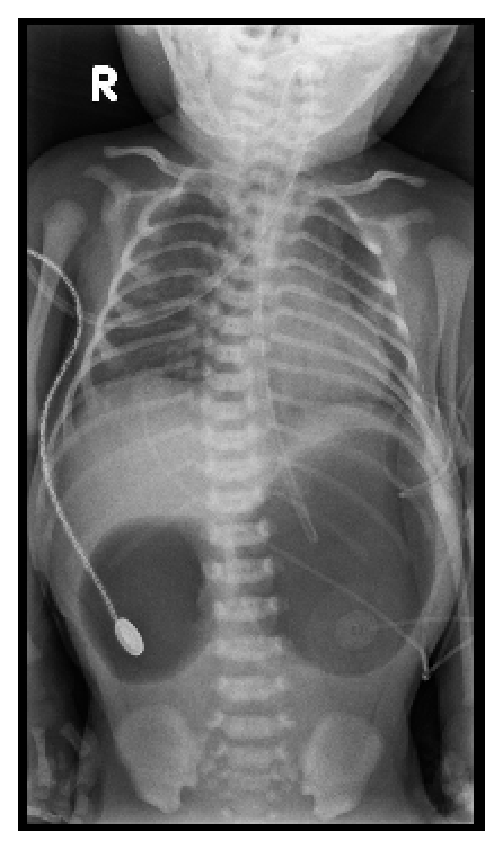
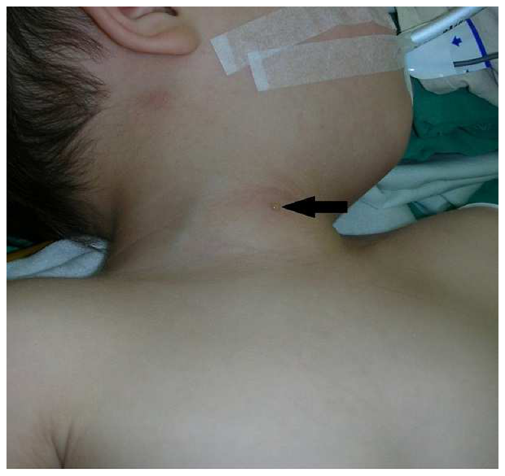
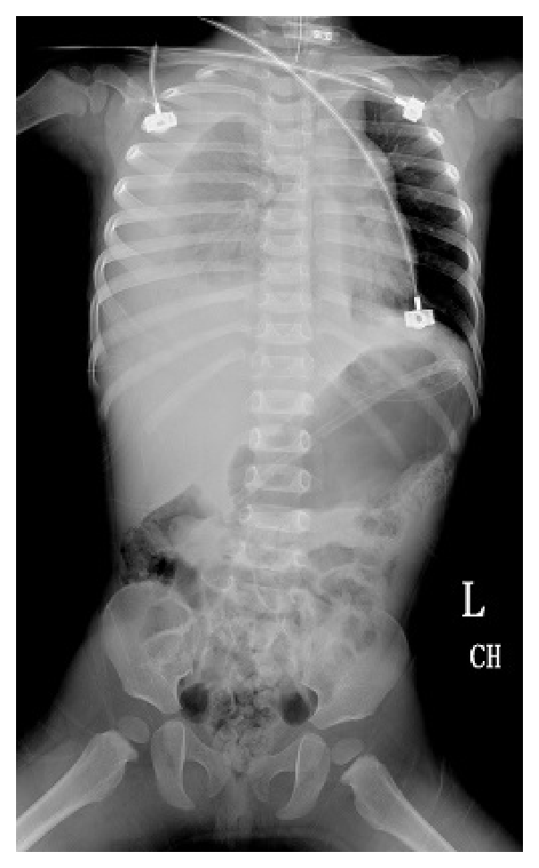
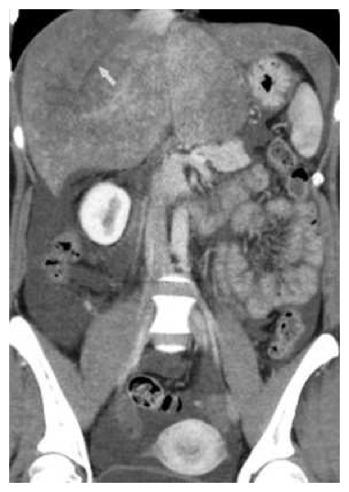
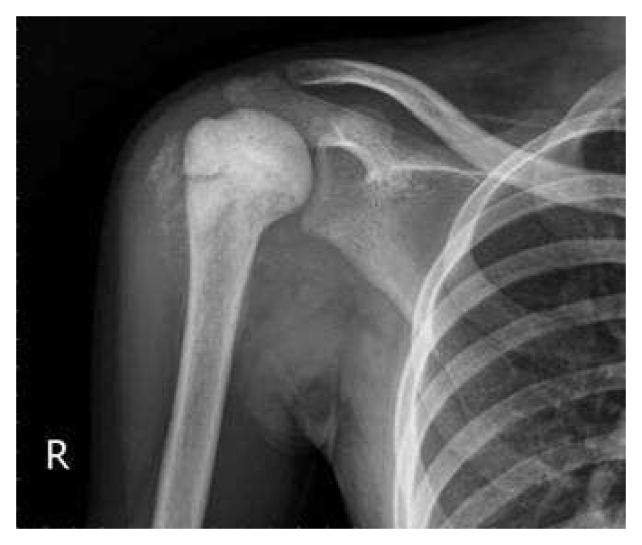

開卷有益 ／
醫師 ／ 醫學（五）（包括外科、骨科、泌尿科等科目及其相關臨床實例與醫學倫理） ／ 113 年第 1 次113 年第 1 次醫師醫學（五）（包括外科、骨科、泌尿科等科目及其相關臨床實例與醫學倫理）試題與答案
這一頁是民國 113 年第 1 次醫師醫學（五）（包括外科、骨科、泌尿科等科目及其相關臨床實例與醫學倫理）的整份歷屆試題，共 80 題，題目與標準答案出自考選部「國家考試試題及測驗式試題答案」開放資料，其中 80 題附有詳解。以下逐題列出題幹、選項與答案；要計時作答或記錄成績，請用線上練習。
考選部原始場次代碼：113020
線上作答這一科 →
全部 80 題
第 1 題
一位嚴重頭部外傷病人（GCS=7 分），在第一時間的處置，下列何者最不適當？
（A） 應放置氣管內管（B） 應趕緊給與類固醇以減少受傷後引起的腦腫或腦壓上升（C） 若有合併低血壓情形，應趕緊給與輸液穩定血壓（D） 應使用頸圈固定病人頸部答案：（B）
詳解與考點 正解：嚴重頭傷且 GCS=7 分；初期處置須避免缺氧與低血壓，但類固醇不能用來改善創傷性腦損傷的腦水腫或顱內壓，反可能造成不利結果，故最不適當的是 B。
A：GCS≤8 分表示病人保護呼吸道的能力可能不足，及早以氣管內管確保氧合與通氣是初級評估的重要處置。
C：低血壓會降低腦灌流壓並加重次發性腦損傷；迅速輸液並處理出血原因以維持循環，屬合理的復甦方向。
D：嚴重頭部外傷可能合併未辨識的頸椎傷，在排除前以頸圈固定可避免搬運或處置時造成進一步脊髓傷害。
本題考點：創傷性腦損傷（traumatic brain injury）的初期復甦以氣道、呼吸與循環為先；次發性腦損傷（secondary brain injury）須避免缺氧與低血壓；類固醇（corticosteroid）不是創傷性腦傷的常規降顱壓治療。
第 2 題
在急診室針對鈍挫傷（blunt trauma）病人的評估，下列何種處置或檢查對確定診斷最無幫助？
（A） 胸部的 X 光檢查（chest X ray）（B） 腹部的 X 光檢查（abdominal film）（C） 骨盆的 X 光檢查（pelvic film）（D） 測量心跳、血壓及 EKG 的變化答案：（B）
詳解與考點 正解：鈍挫傷病人在急診的初步評估；腹部平片對腹腔實質器官傷、腹腔內出血及多數腹部鈍傷的確定診斷資訊有限，不能取代超音波或電腦斷層，故最無幫助的是 B。
A：胸部 X 光可初步發現氣胸、血胸、肋骨骨折或縱隔異常；雖不能排除所有胸傷，仍能提供重要診斷線索。
C：骨盆平片可辨識骨盆骨折；骨盆骨折可能伴隨大量後腹膜出血，因此在選定的鈍傷病人仍有診斷與處置價值。
D：連續測量心跳、血壓與心電圖變化可辨識休克、心律異常或鈍性心臟傷的警訊。它不是影像檢查，卻直接影響是否需立即復甦與進一步檢查，並非無幫助。
本題考點：鈍挫傷評估（blunt trauma evaluation）重視初級評估與生命徵象趨勢；腹部平片（abdominal film）對腹部鈍傷的診斷敏感度有限；創傷影像須依受傷機轉、血流動力學與疑似部位選用。
第 3 題
有關腹部腔室症候群（abdominal compartment syndrome），下列敘述何者錯誤？
（A） 腹部手術後若腹部壓力增加，將導致腹內器官灌流不足（B） 腹部腔室症候群不會影響呼吸器的使用（C） 腹內壓高低可由 Foley catheter 量測（D） 會造成 cardiac output 降低答案：（B）
詳解與考點 正解：腹內壓升高造成的腹部腔室症候群；腹內壓會抬高橫膈、降低胸壁順應性，使呼吸器所需氣道壓上升並影響通氣，因此「不會影響呼吸器使用」錯誤，故選 B。
A：腹內壓升高會壓迫腹腔臟器與血管，降低腹腔灌流壓，可導致腎、腸道及肝臟等器官灌流不足，敘述正確。
C：臨床上可經 Foley catheter 測量膀胱壓，作為間接估計腹內壓的方法；須在標準化姿勢與測量條件下判讀。
D：腹內壓過高會壓迫下腔靜脈、減少靜脈回流，進而使心輸出量下降，故此敘述正確。
本題考點：腹部腔室症候群（abdominal compartment syndrome）由腹內壓（intra-abdominal pressure）升高造成多器官功能障礙；可用膀胱壓（intravesical pressure）間接測量；呼吸、循環與腹腔器官灌流均會受影響。
第 4 題
有關手術後肺坍塌（atelectasis）的敘述，下列何者錯誤？
（A） 麻醉藥的使用，降低了咳嗽反射（B） 術後肺部表面張力素的分泌下降（C） 術後肺部的併發症以肺坍塌最常見（D） 氣管內插管與肺坍塌無關答案：（D）
詳解與考點 正解：術後肺坍塌的危險因子；氣管內插管會干擾正常咳嗽、增加分泌物滯留與小氣道阻塞的機會，與肺坍塌並非無關，故錯誤的是 D。
A：麻醉及鎮痛藥會抑制咳嗽反射與深呼吸，使分泌物較不易清除，因而增加術後肺坍塌風險。
B：手術、麻醉及淺呼吸可造成肺泡復張不足與表面張力素功能下降，使肺泡較易塌陷，敘述符合病理生理。
C：術後肺部併發症中，肺坍塌相當常見，尤其在上腹部或胸部手術、疼痛導致淺呼吸及痰液滯留時。
本題考點：術後肺坍塌（postoperative atelectasis）常由淺呼吸、咳嗽無力及分泌物滯留造成；肺泡表面張力素（surfactant）功能降低會增加肺泡塌陷；肺部復健、止痛與有效排痰有助預防。
第 5 題
米蘭大學的 Mazzaferro 教授等人於 1996 年提出米蘭準則（Milan criteria），用以選擇適合的肝癌患者接受肝臟移植手術。下列何者不是米蘭準則的選擇條件？
（A） 單一顆腫瘤，直徑不大於 6.5 公分（B） 二至三顆腫瘤，每顆直徑皆不大於 3 公分（C） 沒有肝內血管侵犯（D） 沒有肝外轉移病灶答案：（A）
詳解與考點 正解：米蘭準則的腫瘤大小上限。其條件是單一肝細胞癌直徑不超過 5 cm，或不超過 3 顆且每顆不超過 3 cm，並且無大血管侵犯與肝外轉移；（A）把單一腫瘤上限寫為 6.5 cm，超出米蘭準則，故選 A。
B：不超過 3 顆且每顆不超過 3 cm 是米蘭準則的多發腫瘤大小與數量條件，敘述正確。
C：沒有肝內血管侵犯符合米蘭準則排除大血管侵犯的精神；腫瘤大小看似是唯一條件，但血管侵犯同樣會影響移植後復發風險。
D：沒有肝外轉移是選擇肝臟移植候選人的必要條件，故為正確敘述。
本題考點：米蘭準則（Milan criteria）用於肝細胞癌（hepatocellular carcinoma）肝移植選擇；單一病灶上限為 5 cm；多發病灶為最多 3 顆、每顆最多 3 cm，且無大血管侵犯或肝外轉移。
第 6 題
有關胰臟移植，下列敘述何者正確？
（A） 胰臟移植不適合用來治療第一型糖尿病（B） 胰臟移植的胰液引流方法可分為膀胱及腸道引流兩大類，目前以膀胱引流較普遍被使用（C） 胰臟移植最常見的手術併發症為移植物的血管栓塞（D） 胰臟移植後最常見的長期死亡原因為糖尿病復發答案：（C）
詳解與考點 正解：胰臟移植的典型早期手術併發症。移植物血管血栓會迅速危及移植物灌流，是胰臟移植後最常見且重要的手術併發症之一，故正確的是 C。
A：胰臟移植可用於特定第一型糖尿病病人，例如合併末期腎病或嚴重代謝控制問題者；因此稱不適合治療第一型糖尿病錯誤。
B：胰液引流可分膀胱與腸道引流，但目前多以腸道引流為主，因可避免膀胱引流相關的泌尿與代謝問題，故此敘述把常用方式顛倒。
D：移植後的長期死亡原因常與心血管疾病、感染或惡性腫瘤等相關，不是以糖尿病復發為最常見原因。
本題考點：胰臟移植（pancreas transplantation）主要適用於特定第一型糖尿病（type 1 diabetes mellitus）；胰液引流（exocrine drainage）有膀胱與腸道方式；移植物血管血栓（graft vascular thrombosis）是關鍵早期併發症。
第 7 題
接受 Billroth II 手術的病人，常需要補充下列何種電解質？
（A） 鉀（K）（B） 鈉（Na）（C） 鈣（Ca）（D） 鎂（Mg）答案：（C）
詳解與考點 正解：Billroth II 後改變了胃與近端小腸的食物通過路徑，長期可影響營養與礦物質吸收；鈣吸收不良及骨代謝問題較值得補充與追蹤，故選 C。
A：胃切除後若有嘔吐、腹瀉或攝取不足，可能出現低鉀，但鉀並非 Billroth II 病人典型、例行要補充的特定電解質。
B：鈉主要受體液狀態與腎臟調節影響，Billroth II 本身不會特異性造成需常規補鈉的狀態。
D：鎂可在廣泛腸道疾病或特定藥物使用時不足，但不是此術式最具代表性的補充項目。
本題考點：Billroth II 胃切除重建（Billroth II reconstruction）可造成吸收與營養問題；鈣（calcium）吸收與骨代謝須長期留意；術後營養追蹤亦應評估鐵與維生素 B12 等缺乏。
第 8 題
有關腦膜瘤（meningioma），下列敘述何者正確？
（A） 從硬腦膜長出來，MRI 常常描述為 dural-based tumor（B） 手術切除程度（extent of resection）常使用 Simpson grading scale（C） 約有 20% meningioma 病人是多發性（multiple）（D） 不管復發或原發腫瘤，radiation therapy 都沒有治療的角色答案：（B）
詳解與考點 正解：腦膜瘤手術後以何種系統描述切除範圍；Simpson grading scale 依腫瘤、附著硬腦膜與受侵骨的切除程度分級，常用來評估腦膜瘤切除的完整度與復發風險，故選 B。
A：腦膜瘤源自蛛網膜帽細胞（arachnoid cap cells），影像常呈硬腦膜附著的 dural-based lesion，但嚴格說不是「從硬腦膜長出來」；此處將附著位置誤當成細胞起源。
C：多發性腦膜瘤不是一般病例約 20% 的常見比例；多發病灶較應聯想到神經纖維瘤病第 2 型等特定情境。
D：放射治療可用於無法完全切除、復發或較高級別的腦膜瘤，因此稱其完全沒有治療角色錯誤。
本題考點：腦膜瘤（meningioma）多起源於蛛網膜帽細胞；Simpson grading scale 評估手術切除程度；放射治療（radiation therapy）可在殘餘、復發或高風險病灶扮演角色。
第 9 題
WHO 膠質瘤分級 grade I～IV，於光學顯微鏡（light microscopy）下表現的特徵，不包括下列何者？
（A） degree of cellularity（B） pleomorphism（C） calcification（D） necrosis答案：（C）
詳解與考點 正解：WHO 膠質瘤分級在顯微鏡下用來判定惡性度的組織學特徵。細胞密度、細胞異型性／多形性及壞死都與分級判讀有關；鈣化可見於部分腫瘤亞型，卻不是 grade I～IV 的核心顯微分級特徵，故選 C。
A：細胞密度增加反映腫瘤細胞增生程度，是判讀膠質性腫瘤組織學外觀的重要線索。
B：pleomorphism 指細胞與細胞核形態大小不一的異型性，為腫瘤惡性度判讀所用的形態學特徵。
D：壞死尤其是偽柵欄狀壞死，與高度惡性膠質瘤相關，是分級時的重要特徵。
本題考點：膠質瘤組織學分級（glioma histologic grading）重視細胞密度（cellularity）、細胞異型性（pleomorphism）、有絲分裂、微血管增生與壞死（necrosis）；鈣化（calcification）較偏向特定腫瘤亞型的影像或病理線索。
第 10 題
有關評估顱內動脈瘤破裂後之預後的量表，下列何者正確？
（A） Hunt and Hess scale 0 分代表影像上無法判斷有無動脈瘤（B） Fisher grading 是藉由評估核磁共振影像中蜘蛛網膜下腔的出血量，預測發生腦血管痙攣的可能性（C） World Federation of Neurological Surgeons Clinical Grading Scale 數字越小預後越好（D） Glasgow Coma Scale 的分數與預後無關答案：（C）
詳解與考點 正解：破裂顱內動脈瘤後的神經學嚴重度與預後；World Federation of Neurological Surgeons Clinical Grading Scale 以 GCS 與局部神經缺損分級，級數較小代表初始神經狀態較佳、一般預後較好，故選 C。
A：Hunt and Hess scale 用於評估蜘蛛網膜下腔出血後的臨床嚴重度，不是以 0 分表示影像無法判斷動脈瘤。
B：Fisher grading 是依電腦斷層上蜘蛛網膜下腔出血量評估血管痙攣風險，而非以核磁共振影像判讀；它看似是在談出血量與痙攣的關係，但檢查工具說錯。
D：GCS 可反映意識狀態與初始神經損傷程度，與破裂後預後評估有關，不能說無關。
本題考點：World Federation of Neurological Surgeons scale 以 GCS 與局部缺損分級；Hunt and Hess scale 評估蜘蛛網膜下腔出血（subarachnoid hemorrhage）的臨床嚴重度；Fisher grading 依 CT 出血量預測血管痙攣（vasospasm）風險。
第 11 題
某病患有頸椎狹窄之病史，遭到車禍撞擊後意識正常，神經學檢查發現肩膀以下感覺異常，雙臂甚至有刺痛感，上肢肌力 1～2 分，下肢肌力 3～4 分。依照美國脊椎損傷學會（ASIA）的分類，此一病患的 ASIAimpairment scale 和臨床症狀，應為下列何者？
（A） B 級，central cord syndrome（B） C 級，anterior cord syndrome（C） D 級，central cord syndrome（D） E 級，anterior cord syndrome答案：（C）
詳解與考點 正解：頸椎狹窄者遭過伸傷後，上肢無力明顯重於下肢，這是 central cord syndrome 的典型型態；病人仍保有運動功能，且下肢肌力多為 3～4 分，符合 AIS D，即選 C。AIS D 的要點是神經學損傷平面以下至少半數關鍵肌肉肌力達 3 分以上。
A：central cord syndrome 的症候群判斷看似正確，但 AIS B 是感覺不完全、沒有保留運動功能；本例上下肢均有肌力，故分級不符。
B：anterior cord syndrome 通常以運動功能及痛溫覺嚴重受損、後柱感覺相對保留為特徵，非本例上肢較下肢嚴重的表現；且 AIS C 需至少半數關鍵肌肉低於 3 分。
D：AIS E 表示感覺與運動檢查正常，與本例明顯四肢無力及感覺異常不符。
本題考點：中央脊髓症候群（central cord syndrome）常見於頸椎狹窄合併過伸傷，特徵是上肢無力重於下肢；ASIA Impairment Scale D 代表運動不完全且至少半數關鍵肌肉肌力≥3；前脊髓症候群（anterior cord syndrome）則有不同的感覺缺損型態。
第 12 題
下列何種情形不會造成腦壓升高？
（A） 蜘蛛膜下腔出血（B） 降低血中二氧化碳濃度（C） 阻塞性水腦症（D） 腦實質出血 30 c.c.答案：（B）
詳解與考點 正解：腦壓與二氧化碳的腦血管效應。降低血中二氧化碳濃度會造成腦血管收縮、減少腦血容量，短期內反而可降低顱內壓，故不會造成腦壓升高的是 B。
A：蜘蛛膜下腔出血增加顱腔內血液量，並可能妨礙腦脊髓液循環與吸收，會使顱內壓升高。
C：阻塞性水腦症使腦脊髓液無法正常流通，腦室內腦脊髓液量累積，會升高顱內壓。
D：30 c.c. 腦實質出血屬額外占位體積，可直接增加顱腔內容量並造成周邊水腫，會提高顱內壓。
本題考點：顱內壓（intracranial pressure）受腦組織、血液與腦脊髓液容積共同影響；低二氧化碳血症（hypocapnia）引發腦血管收縮；阻塞性水腦症（obstructive hydrocephalus）與顱內出血均可造成顱內壓上升。
第 13 題
下列有關腦膨出（encephalocele）的敘述，何者錯誤？
（A） 大部分膨出發生在頭顱中線（B） 顱底膨出較少見（C） 需做顱骨整型，回置膨出之腦組織（D） 患者常合併智力障礙答案：（C）
詳解與考點 正解：腦膨出囊內腦組織的處理。膨出的腦組織往往已發育不良或無功能，手術目的在修補顱骨與硬腦膜缺損、處理囊內容物，而非一概將其回置顱內；因此（C）的說法錯誤，故選 C。
A：腦膨出多發生於頭顱中線，特別是枕部，符合胚胎神經管閉合與顱骨缺損的分布特性。
B：顱底腦膨出相對少見，可能由鼻腔、鼻咽或其他顱底開口表現，敘述正確。
D：腦膨出常可合併神經發育問題，智力障礙的風險與病灶大小、位置及合併腦部異常相關，故此為正確的概括敘述。
本題考點：腦膨出（encephalocele）是顱骨缺損合併腦膜或腦組織膨出的神經管缺陷；手術重點是硬腦膜與顱骨修補（dural and cranial repair）；膨出腦組織的保留或切除須依其功能性與可回納性評估。
第 14 題
肌肉皮瓣（muscle flap）依照血管供應肌肉的方式可分成五種類型，闊背肌肉皮瓣（latissimus dorsimuscle flap）屬於那一類型？
（A） type II（B） type III（C） type IV（D） type V答案：（D）
詳解與考點 正解：Mathes and Nahai 依肌肉血管蒂型態所作的肌肉皮瓣分類。闊背肌具有一條主要血管蒂，即胸背血管，並有次要節段性血管蒂，屬 type V，故選 D。
A：type II 指一條主要血管蒂加上較小的次要血管蒂，典型分類概念與闊背肌的多個次要節段性供血不符。
B：type III 由兩條主要血管蒂供應，與闊背肌以胸背血管為主要蒂、另有節段性次要蒂的構造不同。
C：type IV 只有多條節段性血管蒂而沒有單一主要蒂；闊背肌有明確的胸背主要血管蒂，故不屬此型。
本題考點：Mathes and Nahai classification 依肌肉皮瓣（muscle flap）的血管蒂分型；闊背肌皮瓣（latissimus dorsi flap）以胸背血管（thoracodorsal vessels）為主要供應；type V 有一條主要血管蒂與多條次要節段性血管蒂。
第 15 題
Gilula's arcs 是指在手腕 X 光 AP view 下可畫出的弧線，用以評估腕骨的對齊狀況，該弧線共有幾條？
（A） 2（B） 3（C） 4（D） 5答案：（B）
詳解與考點 正解：手腕 AP X 光用來評估腕骨排列的 Gilula's arcs。標準判讀共有 3 條平滑、連續的弧線，分別檢視近端腕骨列及中腕關節的對齊，因此選 B。
A：2 條弧線不足以涵蓋 Gilula 所描述的三個腕骨關節面排列關係，容易漏掉中腕關節的不連續。
C：4 條並非標準 Gilula's arcs 的數目；腕骨可有更多可觀察的輪廓，但不等於此特定評估系統的弧線數。
D：5 條同樣超出標準定義，將其他骨皮質線混入 Gilula's arcs 是常見混淆。
本題考點：Gilula's arcs 是手腕 AP X 光（wrist anteroposterior radiograph）的 3 條腕骨排列弧線；弧線中斷提示腕骨不穩定或脫位（carpal instability or dislocation）；影像判讀需同時比較關節間隙與骨列對齊。
第 16 題
於上下顎咬合不正手術，矯正後的標準以符合 Angle classification 系統的第幾型為最佳？
（A） 第一型（class I）（B） 第二型（class II）（C） 第三型（class III）（D） 第四型（class IV）答案：（A）
詳解與考點 正解：正顎手術後的理想咬合關係。Angle classification 的 class I 為上、下顎第一大臼齒關係正常的中性咬合，是矯正咬合不正後追求的標準，故選 A。
B：class II 為下顎相對後縮或上顎相對前突所造成的遠心咬合，屬需要矯正的咬合不正，而非理想終點。
C：class III 為下顎相對前突或上顎相對後縮所造成的近心咬合，同樣是正顎手術可能要改善的異常型態。
D：Angle classification 的標準分類重點為 class I、II、III，並沒有作為理想終點的 class IV；此選項看似延續編號，實則不屬該系統的基本分類。
本題考點：Angle classification 以第一大臼齒關係分類咬合；class I 是中性咬合（normal occlusion）；正顎手術（orthognathic surgery）的目標是兼顧咬合功能、顏面比例與穩定性。
第 17 題
關於頭頸部重建，下列敘述何者錯誤？
（A） 頦下皮瓣（submental flap）的供應血管源於頦下動脈（submental artery），為 facial artery 的分支之一，可用於口腔內部缺損重建（B） 胸大肌肌皮瓣（pectoralis major myocutaneous flap）由內乳動脈（internal mammary artery）供應血流，可用在全喉切除術（total laryngectomy）後的下咽部重建（C） 胸大肌肌皮瓣（pectoralis major myocutaneous flap）可應用於大血管暴露時，作為 salvagereconstructive procedure（D） 鎖骨上皮瓣（supraclavicular flap）由鎖骨上動脈（supraclavicular artery）供應，可應用於臉部或頸部外側，需要做為較薄的皮瓣時使用答案：（B）
詳解與考點 正解：胸大肌肌皮瓣的主供應血管。胸大肌肌皮瓣主要由胸肩峰動脈系統的胸肌支供血，不是由內乳動脈供應；因此（B）錯在血管來源，故選 B。
A：頦下皮瓣的血管蒂為 facial artery 分出的 submental artery，可提供口腔內缺損重建所需的局部組織，敘述正確。
C：胸大肌肌皮瓣組織量大、血流可靠，可覆蓋頭頸部暴露的大血管，作為救援性重建（salvage reconstruction）具實用性。
D：鎖骨上皮瓣可提供較薄且具延展性的皮膚，適用於臉部或頸部表淺缺損；其供血描述符合其作為區域皮瓣的基本概念。
本題考點：胸大肌肌皮瓣（pectoralis major myocutaneous flap）主要依賴胸肩峰血管（thoracoacromial vessels）；頦下皮瓣（submental flap）以頦下動脈為蒂；頭頸部重建（head and neck reconstruction）須依缺損深度、血管狀況及皮瓣厚度選擇。
第 18 題
關於乳癌切除後的乳房重建（breast reconstruction），下列何者正確？
（A） 腹部穿枝皮瓣中的 deep inferior epigastric perforator flap 可以得到最自然與最佳觸感的乳房，也是目前最常使用的乳房重建方法（B） 使用義乳乳房重建（implant-based reconstruction），可能的併發症包括不自然、莢膜攣縮、義乳破裂、感染等（C） 使用自體組織游離皮瓣（free autologous tissue reconstruction）重建乳房時最好選擇腋下的胸背動脈（thoracodorsal vessel）當受區血管（recipient vessel）（D） 義乳乳房重建（implant-based reconstruction）導致的巨大細胞淋巴瘤（BIA-ALCL）西方人比東方人少見答案：（B）
詳解與考點 正解：義乳乳房重建的常見限制與併發症。義乳重建可能有外觀或觸感不自然、莢膜攣縮、義乳破裂與感染等問題，故（B）正確。
A：DIEP flap 可提供自然的自體組織重建效果，但「最佳」及「目前最常使用」並不適用於所有病人；術式選擇受病人解剖、共病、放療、手術風險與偏好影響。
C：游離自體組織乳房重建常選內乳血管作為受區血管，並非以腋下胸背血管為最佳的通則；後者可在特定情況使用，但不是首選原則。
D：BIA-ALCL 與特定表面型態義乳相關，不能以「西方人比東方人少見」作為正確的一般結論；此選項看似在談族群差異，卻未抓住最關鍵的義乳產品與暴露因素。
本題考點：義乳乳房重建（implant-based breast reconstruction）的併發症包括感染、莢膜攣縮與破裂；DIEP flap 是自體組織重建（autologous tissue reconstruction）選項之一；BIA-ALCL 與特定義乳表面相關，術式需個別化選擇。
第 19 題
關於冠狀動脈阻塞疾病，下列敘述何者錯誤？
（A） 根據 AHA/ACC guideline，戒菸對於預防冠狀動脈阻塞是 class I recommendation（B） 接受冠狀動脈繞道手術後，若無絕對禁忌症，建議儘早加上β-blocker（C） 造成 acute coronary syndrome，常見的機轉包含 plaque rupture、thrombus formation（D） 針對心臟收縮功能低下的病人，加上 digoxin 有足夠證據顯示助於降低死亡率答案：（D）
詳解與考點 正解：心收縮功能低下時 digoxin 對死亡率的效果。digoxin 可在特定心衰竭病人改善症狀或減少住院，但沒有足夠證據顯示可降低死亡率，因此（D）錯誤，故選 D。題幹未列 AHA/ACC guideline 的版本，指南分級與繞道術後 β-blocker 的適用條件會隨版本與病人情境調整；本題可確定的辨識點是 digoxin 不具降低死亡率的證據。
A：戒菸是冠狀動脈疾病一級與二級預防的核心措施，在 AHA/ACC 建議中屬強烈建議方向，敘述正確。
B：冠狀動脈繞道手術後若無禁忌症，β-blocker 對適當病人可用於控制心肌缺血、心律與血壓等風險，早期納入治療屬合理敘述。
C：急性冠心症常由動脈粥樣硬化斑塊破裂後形成血栓，引起冠狀動脈急性狹窄或阻塞，敘述正確。
本題考點：急性冠心症（acute coronary syndrome）的典型機轉是斑塊破裂（plaque rupture）與血栓形成（thrombus formation）；digoxin 可作為部分心衰竭的症狀或住院管理藥物，但不降低死亡率；冠狀動脈疾病預防強調戒菸（smoking cessation）。
第 20 題
關於心臟腫瘤，下列敘述何者最適當？
（A） 原發性心臟腫瘤中，惡性多於良性（B） 若為良性腫瘤且病人曾發生栓塞症狀，使用抗凝血劑治療（C） 超過半數的心臟黏液瘤（myxoma）源自左心房的心房中隔（D） 心臟電腦斷層（heart CT）是目前的診斷標準工具答案：（C）
詳解與考點 正解：最常見原發性良性心臟腫瘤的發生位置。心臟黏液瘤多位於左心房，常附著於心房中隔的卵圓窩附近，超過半數源自此處，故最適當的是 C。
A：原發性心臟腫瘤整體以良性腫瘤較多，惡性腫瘤反而較少見，因此此敘述顛倒良惡性比例。
B：良性腫瘤已造成栓塞症狀時，應評估手術切除以移除栓塞來源；抗凝血不能取代對可切除腫瘤的根本處置。
D：心臟超音波通常是評估心臟腫瘤的首要工具，可即時觀察位置、活動度與血流動力學影響；心臟 CT 可補充解剖資訊，但不是唯一或目前的診斷標準。
本題考點：心臟黏液瘤（cardiac myxoma）常位於左心房心房中隔；原發性心臟腫瘤（primary cardiac tumor）多為良性；心臟超音波（echocardiography）是偵測與初步評估心臟腫瘤的核心檢查。
第 21 題
根據 Crawford 的胸腹主動脈瘤修復（thoracoabdominal aortic aneurysm repair）分類，從左鎖骨下動脈起至腎動脈以下之腹主動脈是屬於第幾型？
（A） I（B） II（C） III（D） IV答案：（B）
詳解與考點 正解：題幹的範圍由左鎖骨下動脈延伸至腎動脈以下腹主動脈，正是 Crawford 第 II 型胸腹主動脈瘤；此型涵蓋最長的胸腹主動脈範圍，故選 B。
A：第 I 型雖起於左鎖骨下動脈附近，但遠端通常止於腎動脈上方腹主動脈，沒有延伸至腎動脈以下，故範圍不足。
C：第 III 型主要從遠端胸主動脈延伸至腹主動脈，近端不自左鎖骨下動脈起始，故不符。
D：第 IV 型侷限於腹主動脈，並不涵蓋自左鎖骨下動脈以下的胸主動脈，故不符。
本題考點：Crawford thoracoabdominal aortic aneurysm classification——依主動脈瘤的近端與遠端延伸範圍分型；第 II 型自左鎖骨下動脈區域延續至腎動脈以下腹主動脈。
第 22 題
下列何者為目前診斷深層靜脈栓塞（deep vein thrombosis）最常使用之工具？
（A） 杜卜勒超音波（duplex ultrasound）（B） 核磁共振（magnetic resonance venography）（C） 靜脈攝影（venography）（D） 阻抗容積描記術（impedance plethysmography）答案：（A）
詳解與考點 正解：題幹問目前臨床最常使用的深層靜脈栓塞診斷工具；杜卜勒超音波可同時評估靜脈可壓迫性與血流，是非侵入、可近床執行的首選檢查，故選 A。
B：磁振靜脈攝影可在特定部位或超音波受限時提供資訊，但成本、可近性與常規使用性均不如（A）杜卜勒超音波。
C：靜脈攝影曾是參考標準，但需注射顯影劑且具侵入性，現多保留於診斷不明或介入規劃，而非最常用工具。
D：阻抗容積描記術可間接偵測靜脈阻塞，準確性與實用性不及超音波，已非現行主要檢查。
本題考點：deep vein thrombosis——壓迫合併杜卜勒超音波（duplex ultrasound）以靜脈不可壓迫及血流異常支持診斷，是臨床第一線影像檢查。
第 23 題
對於心臟瓣膜之選擇與敘述，下列何者錯誤？
（A） 一般而言，大於 65 歲之主動脈瓣或大於 70 歲之二尖瓣，偏向選擇使用生物性瓣膜（B） 在機械瓣膜置換後，要使用 prothrombin time（PT）/ international normalized ratio （INR）來監控（C） Ross 手術是將肺動脈瓣取下放到主動脈位置取代主動脈瓣，因不用使用抗凝血劑，特別適合於年老病人（D） 雖然新型的抗凝血劑（novel oral anticoagulant, NOAC）問世，如 dabigatran、rivaroxaban，仍不建議使用於機械性瓣膜病患答案：（C）
詳解與考點 正解：題目問錯誤敘述。Ross 手術以病人的肺動脈瓣移植至主動脈位，確可避免機械瓣的長期抗凝血需求；但其優勢在兒童、青少年或年輕成人的生長與血流動力學，而非「特別適合年老病人」，故錯誤的是 C。
A：瓣膜選擇須整合年齡、出血風險與再手術可能性；高齡者通常較傾向生物性瓣膜，敘述方向正確。
B：機械瓣有血栓風險，需以維生素 K 拮抗劑抗凝，並以（B）PT/INR 追蹤抗凝強度，敘述正確。
D：直接口服抗凝血劑（direct oral anticoagulant, DOAC）不適用於機械性瓣膜；此選項看似是新藥可取代舊藥，卻忽略機械瓣的特殊血栓風險，故敘述正確。
本題考點：prosthetic heart valve——機械瓣需以 warfarin 與 INR 監測；Ross procedure 適用重點是年輕患者；DOAC 不用於機械性心臟瓣膜。
第 24 題
1 天大之新生兒單純大動脈轉位（simple transposition of great arteries without ventriculardefect），發紺，血氧約 60%，下列處置何者最不合醫療常規？
（A） 立即插管，給輸液（B） 避免分流過大，停止血管擴張劑 prostaglandin E1（PGE1），在 2 週後手術（C） 立即送手術室行大動脈轉位手術（arterial switch operation）（D） 可考慮送導管室進行心房中隔氣球擴張術答案：（B）
詳解與考點 正解：單純型大動脈轉位須維持平行循環間的血液混合。發紺且血氧約 60% 時，應以 PGE1 維持動脈導管開放，必要時作心房中隔氣球擴張，並儘早完成動脈轉位；（B）停止 PGE1 且延後 2 週手術會惡化低血氧，最不合常規。
A：低血氧或呼吸不穩時，插管與支持性輸液可協助穩定病人。
C：動脈轉位手術（arterial switch operation）為根治手術；若指迅速完成必要穩定後安排早期手術，方向可接受。若解作未穩定即直接開刀，措辭過強，但仍不如（B）停止 PGE1 並延誤處置不合常規。
D：心房中隔氣球擴張術（balloon atrial septostomy）可增加心房層級混合，是嚴重低血氧時的重要橋接。
本題考點：transposition of the great arteries——平行循環須靠分流混合；PGE1 維持 ductus arteriosus 開放；arterial switch operation 為根治。
第 25 題
關於食道淋巴分布之敘述，下列何者錯誤？
（A） 食道淋巴回流，橫向引流比縱向引流多 6 倍，因此有腫瘤發生時，會有比較多的局部淋巴轉移（B） 食道淋巴引流網絡，比動脈血液網絡豐富（C） 食道淋巴引流主要在黏膜下層（submucosal layer）（D） 頸部食道淋巴引流，很短距離就可穿出肌肉層至局部淋巴結答案：（A）
詳解與考點 正解：題目問食道淋巴分布的錯誤敘述。食道黏膜下淋巴管沿食道長軸縱向走行發達，腫瘤可出現跳躍式、遠距的淋巴結轉移；（A）把橫向引流說成比縱向引流多且主張局部轉移較多，方向顛倒，故選 A。
B：食道的淋巴管網絡相當豐富，且其縱向交通使淋巴轉移範圍不易只侷限於原發灶附近，敘述正確。
C：食道淋巴引流以黏膜下層（submucosal layer）的縱向淋巴管為重要通路，敘述正確。
D：頸段食道可在短距離內引流至頸部局部淋巴結，符合其解剖位置與淋巴引流特性。
本題考點：esophageal lymphatic drainage——黏膜下層淋巴管豐富且以縱向引流為主；此特性解釋食道癌的跳躍性與廣泛淋巴結轉移。
第 26 題
關於食道弛緩症（achalasia），下列敘述何者錯誤？
（A） 食道蠕動壓力測量（manometry）為標準診斷工具（B） 有些病人發生原因與感染有關，如 Chagas disease（parasitic infection with Trypanosoma cruzi）（C） 第四期病人，食道有如巨大之大腸（megaesophagus），常需將患部之食道切除並重建（D） 經過 20 年以上可能會有惡性變化，常見惡性腫瘤為腺癌（adenocarcinoma）答案：（D）
詳解與考點 正解：題目問錯誤敘述。長期食道弛緩症的食物滯留與慢性發炎會增加食道癌風險，典型相關惡性腫瘤是鱗狀細胞癌（squamous cell carcinoma），不是（D）所稱的腺癌，故選 D。
A：高解析食道蠕動壓力測量（manometry）可證實食道體部蠕動缺失與下食道括約肌鬆弛不良，是診斷標準工具，敘述正確。
B：Chagas disease 的 Trypanosoma cruzi 感染可破壞腸神經叢並造成次發性類食道弛緩症，敘述正確。
C：末期巨大食道（megaesophagus）若嚴重擴張、功能喪失或先前治療失敗，可考慮食道切除重建，敘述正確。
本題考點：achalasia——以 manometry 確診；Chagas disease 可造成類似表現；長期食道鬱滯增加 squamous cell carcinoma 風險。
第 27 題
關於小細胞肺癌（small cell lung cancer）之敘述，下列何者錯誤？
（A） 大多是位在中央（central located）（B） 可以分成侷限期（limited stage）及擴展期（extensive stage）（C） 五年存活率很差（D） 發現時大多是以局部侵犯為主，適合手術切除答案：（D）
詳解與考點 正解：題目問小細胞肺癌的錯誤敘述。小細胞肺癌增殖快、早期即容易淋巴與血行轉移，初診時常已為擴展期，主要治療是全身性化學治療合併適當放射治療，而非以手術切除為主，故 D 錯誤。
A：小細胞肺癌常起源於近端支氣管，影像上多為中央型腫瘤，敘述正確。
B：臨床常以侷限期（limited stage）與擴展期（extensive stage）分期，作為治療規劃依據，敘述正確。
C：此癌別惡性度高且容易早期轉移，整體長期存活率不佳，敘述正確。
本題考點：small cell lung cancer——常見中央型、以 limited stage/extensive stage 分類；因早期全身轉移，手術只限極少數嚴格篩選病例。
第 28 題
有關肺部過誤瘤（hamartoma）之敘述，下列何者錯誤？
（A） 是肺部最常見的良性腫瘤（B） 特徵為軟骨（cartilage）過度生長（C） 通常發生於 20～30 歲之年輕女性（D） 通常生長緩慢答案：（C）
詳解與考點 正解：題目問肺部過誤瘤的錯誤敘述。肺過誤瘤多在中老年人偶然發現，兩性皆可見，並非通常發生於 20～30 歲年輕女性，故 C 錯誤。
A：肺過誤瘤是最常見的良性肺腫瘤，常以周邊孤立性結節表現，敘述正確。
B：其為多種正常肺組織成分的錯構性增生，常含軟骨（cartilage），因此影像可見典型鈣化，敘述正確。
D：多數肺過誤瘤生長緩慢、症狀不明顯，常在影像檢查中偶然發現，敘述正確。
本題考點：pulmonary hamartoma——最常見良性肺腫瘤；常含 cartilage 與脂肪，生長緩慢，典型影像可有 popcorn calcification。
第 29 題
有關乳糜胸（chylothorax）的敘述，下列何者錯誤？
（A） 通常是乳白或澄清的外觀（B） 內容物富含三酸甘油脂、乳糜微粒和嗜酸性球（eosinophils）（C） 醫源性（iatrogenic）乳糜胸，常和胸部食道切除或縱隔腔淋巴廓清的手術有關（D） 量少的乳糜胸，可用保守療法，像是中鏈三酸甘油脂飲食（medium-chain triglyceride diet）或是完全禁食搭配全靜脈營養答案：（B）
詳解與考點 正解：題目問乳糜胸的錯誤敘述。乳糜含三酸甘油脂與乳糜微粒，細胞成分以淋巴球為主；（B）把嗜酸性球說成富含的典型細胞成分，錯置了乳糜的細胞學特徵，故選 B。
A：乳糜胸可呈乳白色，但禁食或脂肪攝取少時也可能較澄清，外觀不能單獨排除診斷，敘述正確。
C：胸部食道切除與縱隔淋巴結廓清可能傷及胸導管，是醫源性乳糜胸的重要原因，敘述正確。
D：低輸出量時可先採中鏈三酸甘油脂飲食，或禁食合併全靜脈營養以減少乳糜流量，屬合理的保守治療。
本題考點：chylothorax——胸水乳糜微粒與三酸甘油脂升高、以 lymphocyte 為主；胸導管受傷常見於胸部手術；低輸出量可先保守治療。
第 30 題
下列何者為臨床上小腸腸道出血（small bowel bleeding）較為常見的原因？
（A） small bowel tumors（B） angiodysplasias（C） Crohn's disease（D） Meckel's diverticulum答案：（B）
詳解與考點 正解：小腸出血常在上、下消化道內視鏡未找到出血點後才被考慮；其中血管發育不良（angiodysplasias）是臨床常見原因，病灶脆弱的擴張血管可造成間歇性隱性或明顯出血，故選 B。
A：小腸腫瘤可以出血，但在整體小腸出血原因中不是最常見者。
C：Crohn's disease 可因潰瘍發炎造成出血，通常還會伴隨腹痛、腹瀉或狹窄等病程線索，並非最常見原因。
D：Meckel's diverticulum 是年輕族群小腸出血的重要鑑別診斷；它看似很典型，卻不代表所有臨床小腸出血病例中最常見。
本題考點：small bowel bleeding——angiodysplasia 為常見病因；Meckel's diverticulum 在較年輕患者尤其重要；腫瘤與發炎性腸病亦須鑑別。
第 31 題
下列何項腹腔鏡減重手術是結合侷限和吸收不良減重手術（a combination of restriction andmalabsorption surgery）？
（A） 腹腔鏡調節式胃束帶手術（laparoscopic AGB）（B） 腹腔鏡 Roux-en-Y 胃腸繞道手術（laparoscopic RYGB）（C） 腹腔鏡垂直束帶胃成形術（laparoscopic vertical banded gastroplasty）（D） 內視鏡胃內水球置放術（BIB）答案：（B）
詳解與考點 正解：同時結合限制攝食與吸收不良。Roux-en-Y 胃腸繞道術先建立小胃囊以限制單次攝食量，再繞過部分近端小腸以改變營養吸收與腸道荷爾蒙，因此屬兩種機轉的結合，故選 B。
A：調節式胃束帶以束帶縮小胃入口、限制食量為主，沒有腸道繞道造成的吸收不良機轉。
C：垂直束帶胃成形術也是以改變胃容積與出口限制攝食，並未繞過小腸，故非合併型手術。
D：胃內水球佔據胃腔以增加飽足感，是暫時性的限制性治療，沒有吸收不良成分。
本題考點：bariatric surgery——restrictive procedures 減少胃容量；malabsorptive procedures 改變腸道吸收；Roux-en-Y gastric bypass 同時具有兩者特色。
第 32 題
有關肝硬化臨床表徵的敘述，下列何者錯誤？
（A） 蜘蛛狀血管瘤（spider angioma）與手掌紅斑（palmar erythema）與性荷爾蒙的代謝有關（B） 門脈高壓造成門脈系統與臍動脈之側枝循環（collateral circulation）產生上腹部血流雜音稱為Cruveilhier-Baumgarten murmur（C） 肝硬化會造成心輸出量增加、心跳增加以及周邊血管阻力降低（D） 肌肉痙攣與腹水、高平均動脈壓、高血漿腎素活性有關答案：（D）
詳解與考點 正解：題目問肝硬化臨床表徵的錯誤敘述。肝硬化腹水的有效動脈血容量不足，會使平均動脈壓下降並活化腎素－血管張力素系統；肌肉痙攣與腹水及高腎素活性可相關，但（D）寫成高平均動脈壓，方向錯誤，故選 D。
A：肝臟代謝性荷爾蒙能力下降可造成雌激素相關表徵，如蜘蛛狀血管瘤與手掌紅斑，敘述正確。
B：官方答案為 D；惟門脈高壓造成的側枝循環經典上涉及再通的臍靜脈而非「臍動脈」，此處用語有解剖爭點
C：肝硬化常有周邊血管擴張、周邊血管阻力降低及高動力循環，心輸出量與心跳增加的方向正確。
本題考點：cirrhosis hemodynamics——splanchnic vasodilation 導致有效動脈血容量下降、低 systemic vascular resistance 與腎素活性上升；portal hypertension 可形成臍周側枝循環。
第 33 題
有關克隆氏症（Crohn's disease），下列敘述何者最恰當？
（A） 是可藉由手術治癒的疾病（B） 主要侵犯在大腸（C） 相對好發於社經地位較高者，且抽菸是其危險因子（D） 容易有腸道以外的症狀，且 pyoderma gangrenosum 和 ankylosing spondylitis 與腸道發炎之嚴重程度成正相關答案：（C）
詳解與考點 正解：Crohn's disease 為慢性、復發性發炎性腸病，流行病學上較常見於工業化及較高社經環境，而吸菸會增加發病與較差病程風險，故最恰當的是 C。
A：手術可處理狹窄、瘻管或膿瘍等併發症，但病變可在其他腸段復發，不能藉手術治癒。
B：Crohn's disease 可侵犯口腔至肛門任何部位，最常累及末端迴腸與結腸，不能說主要只侵犯大腸。
D：腸外表現確實常見；但 pyoderma gangrenosum 與 ankylosing spondylitis 不都與腸道發炎嚴重度成正比，後者常可與腸道活動度無關，故不恰當。
本題考點：Crohn's disease——可有 skip lesions 與全消化道侵犯；吸菸是危險因子；手術治療併發症但非根治；extraintestinal manifestations 的活動度相關性各異。
第 34 題
下列有關胃神經內分泌腫瘤（neuroendocrine tumor）的敘述，何者錯誤？
（A） 胃神經內分泌腫瘤是由腸道 interstitial cell of Cajal 增生形成的（B） type II 胃神經內分泌腫瘤與 MEN type I 有關（C） 局部的胃神經內分泌腫瘤治療以完全切除為主（D） type III 胃神經內分泌腫瘤預後最差答案：（A）
詳解與考點 正解：題目問錯誤敘述。interstitial cells of Cajal 是胃腸道基質瘤（gastrointestinal stromal tumor, GIST）的相關細胞來源；胃神經內分泌腫瘤源自胃黏膜的神經內分泌細胞，故（A）將兩者混為一談而錯誤。
B：type II 胃神經內分泌腫瘤可與多發性內分泌腺瘤症第 I 型（MEN type I）及胃泌素過高相關，敘述正確。
C：局限性病灶的處置以能完整切除腫瘤為原則，實際方式依病灶大小、分型與侵犯深度調整，敘述方向正確。
D：type III 胃神經內分泌腫瘤多為散發、侵襲性較高，預後較差，敘述正確。
本題考點：gastric neuroendocrine tumor——源自 neuroendocrine cells；type II 與 MEN1/gastrinoma 關聯；type III 侵襲性與轉移風險最高；GIST 則與 interstitial cells of Cajal 相關。
第 35 題
張小姐 35 歲，因上腹痛至急診室就醫，身體診察腹部柔軟但有明顯壓痛，腹部電腦斷層發現肝臟有一顆 6 公分腫瘤，此腫瘤呈現 peripheral enhancement with centripetal progression，另外腹腔內有少量液體。詢問病史發現病人沒有 B 型、C 型肝炎的病史，但長期服用避孕藥，下列何者為最可能的診斷？
（A） liver cell adenoma（B） focal nodular hyperplasia（C） hamartoma（D） hemangioma答案：（A）
詳解與考點 正解：官方答案為 A。35 歲女性長期服用避孕藥、6 cm 肝腫瘤且腹腔有少量液體，支持肝細胞腺瘤（hepatocellular adenoma）及可能出血；此腫瘤與雌激素暴露相關，較大病灶有出血風險。惟「peripheral enhancement with centripetal progression」是血管瘤的典型增強型態，與（D）一致，故題幹影像線索與官方答案存在衝突。
B：局灶性結節性增生（focal nodular hyperplasia）多見於年輕女性，但通常有中央瘢痕與特徵性動脈期增強，亦較少出血，不能完整解釋本題避孕藥與腹腔液體線索。
C：hamartoma 並非成人肝臟常見、與避孕藥及自發出血相連的典型診斷，故不符。
D：血管瘤（hemangioma）確有周邊結節性增強後向心性填充的典型影像，這是最強誘答；但官方答案顯然優先採用避孕藥相關肝細胞腺瘤與出血的臨床線索。
本題考點：hepatocellular adenoma——與 estrogen exposure 相關，較大病灶須留意出血；hepatic hemangioma——典型為 peripheral nodular enhancement with centripetal fill-in；兩者的臨床與影像線索須交叉判讀。
第 36 題
急性膽管炎時常呈現典型症狀，稱之為 Charcot triad，下列何者不是 Charcot triad 之症狀？
（A） 發燒（B） 黃疸（C） 右上腹腫塊（D） 右上腹痛答案：（C）
詳解與考點 正解：Charcot triad 是急性膽管炎（acute cholangitis）的典型三徵，包括發燒、黃疸與右上腹痛，反映膽道阻塞合併細菌感染。右上腹腫塊並非此三徵之一；腫塊較可能提示膽囊擴張或其他腹部病灶，不能作為急性膽管炎的典型診斷組合，故選 C。
A：發燒是急性膽管炎的典型表現，代表膽道感染造成的全身發炎反應，屬 Charcot triad，故不是答案。
B：黃疸源於膽道阻塞使膽紅素排泄受阻，是 Charcot triad 的一項，故不是答案。
D：右上腹痛反映膽道阻塞與發炎，是 Charcot triad 的一項，故不是答案。
本題考點：急性膽管炎（acute cholangitis）的 Charcot triad 為發燒、黃疸與右上腹痛；若合併低血壓與意識改變，稱為 Reynolds pentad，提示較嚴重的化膿性膽管炎。
第 37 題
關於胰臟 branch duct intraductal papillary mucinous neoplasms（BD-IPMN），下列何者不是 high riskfeatures？
（A） jaundice（B） fever（C） main pancreatic duct＞1cm（D） enhancing mural nodule larger than 5 mm within cyst答案：（B）
詳解與考點 正解：題目問 BD-IPMN 的 high-risk features 何者不是。發燒本身並非用以判定惡性風險的典型高風險影像或臨床特徵；它可提示感染或其他疾病，卻不能單獨作為 IPMN 的高風險判準，故選 B。
A：阻塞性黃疸合併胰頭囊性病灶，應高度警覺惡性或高級別病變，屬重要高風險徵象。
C：主胰管明顯擴張，尤其超過 1 cm，與主胰管型或混合型病灶及惡性風險升高相關，屬高風險特徵。
D：囊腫內有增強壁結節（enhancing mural nodule）且大於 5 mm，提示實質增生與惡性風險，屬高風險特徵。
本題考點：branch duct IPMN——高風險徵象包括 obstructive jaundice、顯著主胰管擴張與 enhancing mural nodule；發燒不是特異性的惡性風險判準。
第 38 題
一位 60 歲女性因意識改變、噁心嘔吐被送至急診，抽血發現血鈣高達 15.5 mg/dL 及 parathyroid hormone（PTH）475 pg/mL，一開始處置下列何者最為適當？
（A） continuous furosemide（B） rehydration with normal saline（C） emergency parathyroidectomy（D） oral cinacalcet答案：（B）
詳解與考點 正解：意識改變、噁心嘔吐與血鈣 15.5 mg/dL 代表嚴重高血鈣危象；高血鈣會造成腎性尿崩樣利尿與脫水，因此第一步是以正常食鹽水擴充血容量、增加腎臟鈣排出，故選 B。
A：furosemide 不是未補液時的常規第一步，先用會加重容量不足；必要時也應在充分補液與嚴密監測後才考慮。
C：副甲狀腺切除可處理病因，但急性危象必須先穩定循環與降低血鈣，不能取代立即補液。
D：cinacalcet 可用於特定持續性副甲狀腺功能亢進的血鈣控制，但口服起效不適合取代高血鈣危象的最初處置。
本題考點：hypercalcemic crisis——嚴重症狀性高血鈣先以 isotonic saline rehydration；loop diuretic 不可在未補液時優先給予；後續再依病因加用降鈣治療或手術。
第 39 題
一位 30 歲女性有 Hashimoto's thyroiditis，因 follicular adenoma 接受甲狀腺左葉全切除手術，術後一個月抽血發現 TSH 6.0 mIU/L，較正常值略為升高，free T4 仍在正常範圍，儘管並無臨床症狀，某些情況下仍建議她服用甲狀腺素補充，但下列何者除外？
（A） pregnancy（B） 1.5 cm nodular goiter in the right thyroid（C） presence of coronary heart disease（D） presence of TSH receptor antibody答案：（D）
詳解與考點 正解：術後 TSH 輕度上升而 free T4 正常是亞臨床甲狀腺低下（subclinical hypothyroidism）。懷孕、殘存腺體有結節性甲狀腺腫等情境可提高補充甲狀腺素的考量；TSH receptor antibody 主要與 Graves disease 的自體免疫活性相關，並不是此情境支持補充治療的典型依據，故除外為 D。
A：懷孕時甲狀腺素需求與母胎甲狀腺功能控制都很重要，對亞臨床甲狀腺低下通常更傾向治療。
B：右葉仍有結節性甲狀腺腫，補充甲狀腺素可在特定個案納入考量，並須配合超音波與臨床追蹤。
C：冠心病病人開始甲狀腺素須低劑量、審慎調整，以免誘發心肌缺血；這是治療方法需特別小心的情境，而非 TSH receptor antibody 那種不相符的指標。
本題考點：subclinical hypothyroidism——TSH 升高而 free T4 正常；pregnancy 與甲狀腺結構異常會影響治療決策；TSH receptor antibody 是 Graves disease 的相關抗體。
第 40 題
一位 12 歲男童因意外發現高血壓 192/110 mmHg 來小兒科門診，無甲狀腺癌及嗜鉻細胞瘤家族史。經檢查結果：24 小時尿 VMA 24.2 mg，腹部超音波及電腦斷層掃描發現右腎上腺有一 5×4×3 cm3腫塊合併中央區壞死。下列處置何者最不適當？
（A） 術前準備建議服用 spironolactone 以降血壓（B） 建議進行腹腔鏡腎上腺摘除術（C） 術中血壓若太高可藉由 nitroprusside 或 phentolamine 調控（D） 術後若再犯應安排 MIBG scan 偵查其他病灶答案：（A）
詳解與考點 正解：高血壓、尿 VMA 上升及腎上腺腫塊高度支持嗜鉻細胞瘤（pheochromocytoma）。術前需先做足 α-adrenergic blockade 控制兒茶酚胺造成的血管收縮，再評估其他藥物；spironolactone 是醛固酮拮抗劑，並非嗜鉻細胞瘤標準術前阻斷藥，故（A）最不適當。
B：局限的腎上腺嗜鉻細胞瘤在充分術前準備後，可考慮腹腔鏡腎上腺摘除術，敘述正確。
C：手術操作腫瘤時若出現嚴重高血壓，可用（C）nitroprusside 或 phentolamine 快速控制血壓，符合麻醉與手術期處置原則。
D：術後若疑似復發或有其他病灶，可安排 MIBG scan 協助尋找兒茶酚胺分泌組織，敘述合理。
本題考點：pheochromocytoma——術前以 alpha blockade 降低術中高血壓危象；腎上腺切除為根治；MIBG scintigraphy 可協助定位復發或多發病灶。
第 41 題
下列那一乳癌病人，最不適合保留乳房？
（A） 病人乳房為 E 罩杯，乳房腫瘤約 2 公分（B） 腋下淋巴結證實有癌轉移（C） 乳房 X 光攝影有多處不在同一象限（quadrant）不確定良惡性的顯微鈣化（microcalcifications）（D） 病理檢驗為侵犯性乳癌（invasive carcinoma）答案：（C）
詳解與考點 正解：保留乳房手術須能將病灶完整切除並達成可接受的外觀，且殘存乳房不應有廣泛、難以界定的惡性或可疑病灶。多處位在不同象限的不確定顯微鈣化，可能代表廣泛或多中心病變，無法可靠地以單一局部切除處理，最不適合保留乳房，故選 C。
A：E 罩杯乳房相對有較多組織可容納 2 cm 切除範圍，若可取得乾淨邊緣並接受放療，反而有利於保留乳房。
B：腋下淋巴結轉移影響腋下分期與全身治療規劃，但本身不是保留乳房手術的絕對禁忌。
D：侵犯性乳癌可接受保留乳房手術合併放射治療；它看似病理較嚴重，卻不如多中心或廣泛鈣化那樣直接妨礙局部完整切除。
本題考點：breast-conserving surgery——適用前提是可完整局部切除並取得適當邊緣，通常合併放射治療；multicentric disease 或廣泛可疑 microcalcifications 不利保留乳房。
第 42 題
有關乳癌篩檢敘述，下列何者錯誤？
（A） mammography 是歐美大量篩檢最常用的工具（B） 乳房超音波（ultrasound）有 operator-dependent 的問題（不同人操作可能有不同結果）較不適合做篩檢工具（C） 50 歲以上 mammography 篩檢效果較好，因爲 mammography 在緻密性乳房（dense breast）靈敏度較好（D） 50 歲以下 mammography 篩檢效果較差，原因之一可能是因為腫瘤進展較快速答案：（C）
詳解與考點 正解：乳房攝影在不同年齡與乳房密度下的篩檢效能。50 歲以上族群的篩檢效果通常較佳，重要原因是較常見脂肪性乳房、病灶與背景組織的對比更好；緻密性乳房反而會遮蔽病灶、降低 mammography 靈敏度。因此（C）把較佳效能歸因於緻密性乳房，因果方向錯誤，故選 C。
A：mammography 是歐美乳癌族群篩檢最常使用的工具；其能偵測微鈣化等早期變化，敘述正確，故不是本題的錯誤選項。
B：乳房超音波的影像取得與判讀較受操作者影響，且作為一般族群單獨篩檢容易增加偽陽性，因此通常不是首選的普遍篩檢工具，敘述正確。
D：較年輕女性除乳房較緻密外，部分腫瘤生物學行為較快速，可能縮短可被篩檢及早發現的時間窗；此敘述沒有把它說成唯一原因，故可成立。
本題考點：乳癌篩檢（breast cancer screening）——乳房攝影的效能受乳房密度影響；緻密性乳房（dense breast）使病灶較容易被纖維腺體組織遮蔽，而非提高靈敏度。
第 43 題
21 歲女性因右乳疼痛接受乳房超音波檢查，發現右乳有一 2.3 公分低回音病灶疑似纖維腺瘤（fibroadenoma），BI-RADS category 2，則下列處置何者較不考慮？
（A） 半年至一年進行超音波追蹤（B） 進一步安排乳房攝影（mammography）檢查（C） 可考慮切片檢查（D） 若疼痛困擾嚴重可酌量給與止痛藥物答案：（B）
詳解與考點 正解：21 歲、超音波疑似纖維腺瘤且 BI-RADS category 2，代表良性發現。此年齡層乳房組織通常緻密，乳房攝影的額外診斷效益有限，也不會因一個 BI-RADS 2 病灶而常規加做，故較不考慮（B）進一步安排 mammography。
A：良性病灶可依臨床情況安排超音波追蹤；雖非每一個 BI-RADS 2 病灶都必須密集追蹤，但它比常規加做乳房攝影更可被考慮。
C：影像與臨床觸診若不一致、病灶長大或診斷仍有疑慮時，可考慮組織切片；它看似較侵入，但有明確疑慮時仍有角色，不能說是最不考慮。
D：疼痛處理應依症狀給予支持性治療，酌量使用止痛藥是合理作法，與良性影像判讀不衝突。
本題考點：BI-RADS（Breast Imaging Reporting and Data System）——category 2 為良性影像發現；年輕女性的乳房腫塊以超音波為重要初始評估工具，是否切片須結合影像與臨床一致性。
第 44 題
一幼兒因嘔吐求診，腹部Ｘ光如圖所示，下列何者為最不可能之鑑別診斷？

（A） 胃蹼（gastric web）（B） 十二指腸蹼（duodenal web）（C） 環狀胰（annular pancreas）（D） 腸道旋轉不良併扭轉（malrotation with volvulus）答案：（A）
詳解與考點 正解：腹部 X 光可見上腹部兩個相鄰、明顯充氣擴張的氣泡，為胃與近端十二指腸的「雙泡徵象（double bubble sign）」，表示阻塞位於十二指腸遠端之前。胃蹼主要造成胃出口阻塞，通常以胃單獨擴張為主，無法合理解釋圖中的近端十二指腸也充氣擴張，故最不可能的是 A。
B：十二指腸蹼（duodenal web）可造成十二指腸腔內阻塞，使胃與近端十二指腸積氣擴張，形成雙泡徵象；蹼孔大小不同可影響是否仍有少量遠端腸氣，故可列入鑑別。
C：環狀胰（annular pancreas）以胰組織環繞十二指腸造成外在壓迫，常在嬰幼兒表現為十二指腸阻塞及雙泡徵象，因此與圖像相符。
D：腸道旋轉不良併扭轉（malrotation with volvulus）可因中腸扭轉造成近端腸阻塞，早期亦可能呈胃及十二指腸擴張；雖需及時處置，但仍是此影像型態的重要鑑別。
本題考點：雙泡徵象（double bubble sign）代表近端十二指腸阻塞；十二指腸蹼（duodenal web）與環狀胰（annular pancreas）是常見原因；腸道旋轉不良併中腸扭轉（malrotation with midgut volvulus）須作為急症鑑別。
第 45 題
鼠蹊部疝氣（inguinal hernia）為兒童常見的外科疾病，了解疝氣腹壁解剖學相關知識對於手術執行極為重要。下列有關鼠蹊部疝氣解剖學，何者敘述正確？
（A） 間接型鼠蹊疝氣（indirect inguinal hernia）經由腹壁下動脈（inferior epigastric artery）內側突出於腹壁，多發生於兒童（B） 髂腹下神經（iliohypogastric nerve）走於精索（spermatic cord）之上，與精索一齊穿出外鼠蹊環（external inguinal ring），負責大腿內側上方的感覺（C） 提睪肌（cremaster muscle）是由腹內斜肌（internal oblique muscle）延伸而來（D） 睪丸動脈（testicular artery）源自內髂動脈（internal iliac artery）答案：（C）
詳解與考點 正解：鼠蹊管各層腹壁構造的來源。提睪肌（cremaster muscle）主要由腹內斜肌（internal oblique muscle）的肌纖維延續形成，包繞精索，是正確的解剖對應，故選 C。
A：間接型鼠蹊疝氣經腹壁下動脈外側的內鼠蹊環進入鼠蹊管；經腹壁下動脈內側突出的是直接型鼠蹊疝氣。兒童常見間接型看似支持此項，但血管內外側寫反了。
B：髂腹下神經通常不隨精索穿出外鼠蹊環，且其感覺分布不以大腿內側上方為主；與精索一同穿出並支配該區感覺的重點神經是髂腹股溝神經（ilioinguinal nerve）。
D：睪丸動脈直接源自腹主動脈（abdominal aorta），不是內髂動脈。
本題考點：鼠蹊疝氣（inguinal hernia）解剖——間接型位於腹壁下動脈外側；提睪肌（cremaster muscle）源自腹內斜肌；睪丸動脈（testicular artery）源自腹主動脈。
第 46 題
一位 6 個月大的幼兒過去無任何病史，因頸部胸鎖乳突肌前緣皮膚有一小開口且有分泌物（如圖所示）接受手術，最可能的診斷為何？

（A） 甲狀舌管瘻管（thyroglossal duct fistula）（B） 第二對鰓裂遺跡瘻管（second branchial remnant fistula）（C） 淋巴結發炎（lymphadenitis）（D） 淋巴管瘤併淋巴外漏（lymphangioma with lymphorrhea）答案：（B）
詳解與考點 正解：圖中可見頸部胸鎖乳突肌前緣有小型皮膚開口及分泌物，位置正是第二對鰓裂遺跡瘻管（second branchial remnant fistula）的典型外口所在。第二對鰓裂異常最常見，完整瘻管的外口通常位於胸鎖乳突肌前緣、頸部下段，可能反覆有黏液性分泌物或感染，故選 B。
A：甲狀舌管瘻管（thyroglossal duct fistula）多位於頸部正中線，常與舌骨附近的腫塊或感染相關；本圖的開口在胸鎖乳突肌前緣的側頸部，解剖位置不符。
C：淋巴結發炎（lymphadenitis）通常表現為局部淋巴結腫大、壓痛、發紅或發燒，並不會在嬰兒先天性側頸部固定位置形成小皮膚開口持續分泌。
D：淋巴管瘤併淋巴外漏（lymphangioma with lymphorrhea）常為柔軟、可壓縮的頸部腫塊，可呈多房性囊狀病灶；圖中主要是胸鎖乳突肌前緣的局限性瘻管外口，沒有相應的大型腫塊外觀，較不符合。
本題考點：鰓裂異常（branchial cleft anomalies）常以側頸腫塊、竇道或瘻管表現；第二對鰓裂遺跡（second branchial remnant）最常見，其外口典型位於胸鎖乳突肌前緣；甲狀舌管異常（thyroglossal duct anomaly）則以頸部正中線病灶為主。
第 47 題
媽媽抱著 1 歲半女童坐副駕駛座，爸爸因疲勞駕車自撞橋墩而被送至醫院急診，發現女童意識昏迷，對疼痛刺激稍微會縮手，血壓 65/23 mmHg，心跳 153/min，呼吸 24/min，體溫 36.3℃，脈搏血氧飽和度 90%，目測體重約 10 公斤，下列敘述何者錯誤？
（A） 病童昏迷指數為 E1V1M4，但呼吸道暢通，且仍有自發性呼吸，可以不需插氣管內管（B） 全身身體檢查是否有外傷或內出血，若可能並予以止血（C） 立刻建立周邊靜脈注射並抽血檢查，先給與輸液（如：normal saline）200 mL 三次後再度測量生命徵象仍未改善，應立即輸血（D） 可行全身電腦斷層掃描，以檢查受傷情況答案：（A）
詳解與考點 正解：創傷兒童的 GCS 為 E1V1M4，總分 6，且脈搏血氧飽和度僅 90%。GCS ≤8 時須優先評估並保護呼吸道；即使暫有自發呼吸，也可能因意識惡化、嘔吐或分泌物而失去保護能力。因此（A）說可不需氣管內插管是錯誤敘述，故選 A。
B：初級評估須尋找外出血及可能的內出血，能控制的出血應立即止血。
C：10 kg 兒童初始等張晶體液可為 20 mL/kg，即 200 mL；每次補液後均須重評。若反應不佳且血品可得，應及早輸血，不宜常規等到 3 次晶體液後。
D：完成呼吸道、呼吸與循環復甦且生命徵象足以承受檢查後，全身電腦斷層可用於評估多重創傷。
本題考點：兒童創傷初級評估（pediatric trauma primary survey）——氣道保護優先於影像；格拉斯哥昏迷指數（Glasgow Coma Scale, GCS）≤8 應考慮氣管內插管；出血性休克須反覆評估復甦反應。
第 48 題
承上題，檢查全身無明顯出血及外傷，頭部電腦斷層無頭骨骨折及顱內出血，但仍意識不清，胸腹部 X 光如圖所示，輸注 packed RBC 100 mL 後量測生命徵象，血壓 114/53 mmHg，心跳 163/min，呼吸 28/min，體溫36.7℃，脈搏血氧飽和度 90%，下列敘述何者錯誤？

（A） 應持續監測昏迷指數及瞳孔大小等神經學檢查，可能需要再次進行頭部電腦斷層檢查（B） 追蹤抽血檢查結果，持續嚴密監控生命徵象及尿量（C） 雖無肋骨骨折，但右側可能血胸（D） 置入胸管後馬上引流出 230 mL 血色引流液，應立即進行開胸手術止血答案：（D）
詳解與考點 正解：前題體重約 10 kg，胸管立即引流 230 mL，計算為 230 mL/10 kg=23 mL/kg，已達應高度考慮緊急開胸止血的量級。然而達到門檻不等於僅憑單次數值便必然立即開胸，仍須合併持續出血量、復甦反應與血流動力學判斷；故（D）的絕對敘述錯誤。
A：意識持續不清時，須反覆評估昏迷指數與瞳孔；神經狀態惡化或持續異常可考慮再次頭部電腦斷層。
B：病人仍心搏過速且血氧飽和度低，應追蹤血液檢查、生命徵象及尿量。
C：圖示可支持右側胸腔有液體或血液累積；未見肋骨骨折不能排除血胸。
本題考點：血胸（hemothorax）——兒童立即胸管引流量須依體重換算；開胸止血（thoracotomy）須整合初始及持續引流量與血流動力學。
第 49 題
有關腸套疊（intussusception）的敘述，下列何者最適當？
（A） 臨床表現多半與 2 的法則（the rule of 2’s）有關（B） 疑似病例可以行99mTc-pertechnetate 核醫學檢查，以確定診斷（C） 是最常見的先天性胃腸道畸形（D） 靜水壓力復位術（hydrostatic reduction）對於大部分單純性的腸套疊都適用答案：（D）
詳解與考點 正解：「單純性」腸套疊的治療。沒有腹膜炎、穿孔或休克等禁忌時，影像導引下以液體灌腸施行靜水壓力復位術（hydrostatic reduction）可同時診斷與治療，適用於多數病例，故選 D。
A：2 的法則（rule of 2’s）是 Meckel 憩室的記憶口訣，不是腸套疊的典型臨床表現。腸套疊較常考腹痛發作、嘔吐、果醬樣血便與腹部腫塊。
B：99mTc-pertechnetate 掃描用於偵測含異位胃黏膜的 Meckel 憩室；疑似腸套疊通常以腹部超音波評估，故不是確定診斷的首選。
C：最常見的先天性胃腸道畸形是 Meckel 憩室，不是腸套疊；腸套疊是兒童常見的腸阻塞原因。
本題考點：腸套疊（intussusception）——穩定且無穿孔或腹膜炎者可用灌腸復位；Meckel 憩室（Meckel diverticulum）才與 rule of 2’s 及 99mTc-pertechnetate 掃描相關。
第 50 題
55 歲女性於健康檢查時糞便潛血反應陽性，問診並無血便、排便習慣改變等症狀且無大腸直腸癌家族史，肛門指診及肛門鏡檢查發現內痔但沒有出血。安排大腸鏡檢查後於乙狀結腸發現一個約 1 公分的莖性息肉（pedunculated polyp），下列何項處理最適當？
（A） 做內視鏡息肉切除（polypectomy）（B） 只做切片再觀察（C） 直接安排腹腔鏡前位切除（laparoscopic anterior resection）（D） 觀察即可答案：（A）
詳解與考點 正解：糞便潛血陽性後大腸鏡看見約 1 cm 的莖性乙狀結腸息肉。此類可安全切除的息肉應在內視鏡下完整切除並送病理，既能診斷腺瘤性變化，也可去除日後癌化風險，故選 A。
B：只取切片會留下可切除的整個息肉，也無法完整評估切除邊緣與病灶全貌；它看似較保守，但對可處理的莖性息肉不是最佳處置。
C：未有侵襲癌或無法內視鏡切除的證據時，直接做腹腔鏡前位切除過度治療，手術風險遠高於內視鏡息肉切除。
D：即使內痔未出血，糞便潛血陽性仍須完成結腸評估；已發現息肉後單純觀察會遺漏病理診斷與預防性切除的機會。
本題考點：大腸息肉（colorectal polyp）——可內視鏡完整切除的莖性息肉以息肉切除術（polypectomy）處理；病理結果決定後續監測與是否需要追加治療。
第 51 題
骨盆底肌肉（pelvic floor）的組成不包括下列那一群？
（A） puborectalis muscle（B） iliococcygeus muscle（C） pubococcygeus muscle（D） gluteus maximus muscle答案：（D）
詳解與考點 正解：骨盆底的主體為提肛肌（levator ani）群。恥骨直腸肌、髂尾肌與恥骨尾肌都屬於提肛肌；臀大肌（gluteus maximus）位於臀部表層，主要功能為髖關節伸展，並非骨盆底肌，故選 D。
A：恥骨直腸肌（puborectalis muscle）是提肛肌的一部分，形成維持肛直腸角的重要肌束，敘述所指為骨盆底成員。
B：髂尾肌（iliococcygeus muscle）為提肛肌的組成，與其他提肛肌纖維共同支撐骨盆臟器。
C：恥骨尾肌（pubococcygeus muscle）同屬提肛肌，是骨盆底的重要組成。
本題考點：骨盆底（pelvic floor）——以提肛肌（levator ani）為主，包括恥骨直腸肌、恥骨尾肌與髂尾肌；臀大肌（gluteus maximus）屬臀肌群。
第 52 題
關於降結腸癌手術造成大出血，最常見的原因為：
（A） 脾臟撕裂傷（B） 上腸繫膜靜脈撕裂（C） 下腔靜脈撕裂（D） 主動脈撕裂答案：（A）
詳解與考點 正解：降結腸位於左上腹並靠近脾臟下極與脾曲。進行降結腸癌手術時，游離脾曲或牽拉結腸可傷及脾被膜，脾臟撕裂傷是造成大量出血的常見原因，故選 A。
B：上腸繫膜靜脈主要位於右側腸繫膜根部，與降結腸手術的典型解剖操作區不相鄰，較難成為最常見原因。
C：下腔靜脈位置深且偏右後腹膜，並非左側結腸游離時最常直接受傷的構造。
D：主動脈亦在深部後腹膜；雖然任何大血管傷害都可嚴重出血，但就降結腸手術的常見鄰近傷害而言不如脾臟撕裂。
本題考點：降結腸手術（descending colectomy）解剖——脾曲（splenic flexure）游離時要注意脾臟被膜；脾損傷（splenic injury）可導致顯著術中出血。
第 53 題
關於腹腔鏡與開放式闌尾切除手術（laparoscopic appendectomy versus open appendectomy）的比較，下列何者錯誤？①總體來說，與開放手術相比，腹腔鏡手術的併發症發生率較低 ②開放式闌尾切除手術可以檢查整個腹膜腔，因此可排除其他腹腔內急性疾病，例如憩室炎或卵巢膿腫 ③不管採用何種方法，闌尾切除手術最重要的是安全地進行手術以維持病患安全 ④患者出現局部右下腹疼痛和發燒，理學及影像檢查發現可能為闌尾炎延遲發作（delayed presentation of appendicitis），此時腹腔鏡引流手術（laparoscopic drainage）因為沒有助益，不應施行
（A） ①②③（B） ①②④（C） 僅②③（D） 僅②④答案：（D）
詳解與考點 正解：判斷四個敘述中錯誤的組合。（②）把能檢查整個腹膜腔的優點誤放在開放式手術，實際上腹腔鏡較能廣泛檢視腹腔；（④）延遲就醫的闌尾炎若形成局部膿瘍，腹腔鏡引流在適當個案可有治療角色，不能一概說無助益而不應施行。因此錯誤的是②、④，故選 D。
A：（A）納入（①）而排除（④），不符判讀；腹腔鏡闌尾切除術整體具微創優勢，且無論術式皆須以病人安全為優先，故（①）與（③）不是本題的錯誤敘述。
B：（B）把正確的（①）與錯誤的（②）（④）併列，因（①）不應被選入，故組合不對。
C：（C）僅列（②）（③），漏掉同樣錯誤的（④），又誤把安全手術原則（③）列為錯誤，故不對。
本題考點：闌尾切除術（appendectomy）——腹腔鏡可檢視腹腔並具微創優勢；複雜性闌尾炎（complicated appendicitis）的膿瘍處置須依局部感染範圍與病人狀況個別選擇引流或手術。
第 54 題
微創手術（minimally invasive surgery）的發展改變外科手術的方式，下列敘述何者正確？ ①相對於非急性期腹腔鏡膽囊切除術，急性膽囊炎的腹腔鏡膽囊切除術具有更長的手術時間和更高的機率因為失敗轉為開腹手術，並且具有更高的總膽管及總肝管損傷風險 ② 大多數腹腔鏡檢查是使用 CO2 氣腹方式進行的，腹部壓力設定在 25 mmHg ③鼻胃管置入可以減輕胃部壓力並增加手術視野 ④如果進行膽道造影，常用的方式為在膽囊開口切開膽囊管，然後將膽管造影導管穿過，將造影劑注入膽囊管和膽道獲得膽道攝影（cholangiogram）圖像 ⑤如果是急性膽囊炎在手術過程中造成膽囊破裂，應使用無菌檢體袋取回檢體及濺出的所有結石
（A） 僅①③④（B） 僅②④⑤（C） ①②④⑤（D） ①③④⑤答案：（D）
詳解與考點 正解：腹腔鏡膽囊切除與術中技術的正確組合。（①）急性發炎會增加剝離困難與轉開腹及膽道傷害風險；（③）鼻胃管減壓可改善視野；（④）可由膽囊管置入導管注射顯影劑作膽道攝影；（⑤）膽囊破裂時以檢體袋取出膽囊與遺落結石有助避免污染。因此正確為①③④⑤，故選 D。急性膽囊炎相對於非急性期的精確手術風險會受炎症程度與術者經驗影響，無法由題幹判定個別幅度。
A：（A）漏列（⑤）。急性膽囊炎造成膽囊破裂時，應盡量清除濺出的結石，不能因為是手術中的意外就忽略。
B：（B）納入（②）而漏列（①）（③）；大多數腹腔鏡的常用氣腹壓力不會設定到 25 mmHg，過高壓力會增加生理負擔，故（②）是強誘答但錯誤。
C：（C）同樣納入錯誤的（②），且漏掉可增加術野的（③），組合不正確。
本題考點：腹腔鏡膽囊切除術（laparoscopic cholecystectomy）——急性發炎增加解剖辨識與膽道傷害風險；術中膽道攝影（intraoperative cholangiography）可經膽囊管進行；氣腹壓力須兼顧手術視野與生理效應。
第 55 題
關於單一切口腹腔鏡手術（single-incision laparoscopic surgery）建議的設備及對外科醫師的益處之敘述，何者錯誤？
（A） 較長的器械較易接觸到手術區域（surgical field）（B） 長短不一的器械（varied-length instruments）無法減少體外的器械碰撞（extracorporeal clashing）（C） 高畫質的鏡頭可提供高品質影像及術內視野（D） 較細長的器械（slimline instruments）可以減少手術內部及外部的碰撞答案：（B）
詳解與考點 正解：單一切口腹腔鏡的器械互相碰撞問題。由於器械從同一切口進出，採用長短不一的器械可讓握柄與器械軸錯開，反而有助減少體外碰撞。因此（B）稱其無法減少 extracorporeal clashing 是錯誤敘述，故選 B。
A：較長器械可增加從單一入口到達較深手術區域的能力，敘述符合單一切口手術的器械考量。
C：高畫質鏡頭可提升影像解析度與術中辨識，對狹窄且器械容易互相干擾的術野尤其有幫助，敘述正確。
D：較細長的器械可減少體內與體外的器械衝突；它看似只改變器械外徑，但正是為了改善單一切口的操作三角限制。
本題考點：單一切口腹腔鏡手術（single-incision laparoscopic surgery）——單一入口易產生器械碰撞；不同長度與較細長器械（varied-length and slimline instruments）可改善操作空間與視野。
第 56 題
有關骨腫瘤的敘述，下列何者最適當？
（A） Ollier disease 是指多發性內生軟骨瘤（multiple enchondromas）合併血管瘤（hemangiomas）（B） 軟骨母細胞瘤（chondroblastoma）好發於青少年的長骨骨骺（epiphysis）（C） 骨巨大細胞瘤（giant cell tumor of the bone）復發率極低，手術採用病灶內刮除（D） 單純性骨囊腫（simple bone cyst）好發於成年人的肱骨遠端答案：（B）
詳解與考點 正解：骨腫瘤的年齡與骨內位置。軟骨母細胞瘤（chondroblastoma）典型發生於青少年長骨的骨骺（epiphysis），與生長板附近的分布相符，故選 B。
A：多發性內生軟骨瘤合併血管瘤是 Maffucci syndrome；Ollier disease 為多發性內生軟骨瘤但不以血管瘤為特徵，兩者容易混淆。
C：骨巨大細胞瘤常採病灶內刮除合併輔助處理，但有局部復發風險，不能說復發率極低。
D：單純性骨囊腫常見於兒童或青少年的近端肱骨或近端股骨，不是成人肱骨遠端。
本題考點：骨腫瘤（bone tumors）——軟骨母細胞瘤（chondroblastoma）好發青少年骨骺；Maffucci syndrome 為內生軟骨瘤合併血管瘤；單純性骨囊腫（simple bone cyst）常見於未成熟骨骼。
第 57 題
為了改善骨科人工關節置換常規排程手術感染的發生率，下列敘述何者最適當？
（A） 應適當選擇預防性（prophylactic）抗生素（B） 預防性抗生素應在執行切開手術傷口前 120 分鐘開始給藥（C） 預防性抗生素應在手術結束後 72 小時才能停止給藥（D） 常規使用 vancomycin 或 clindamycin 減少手術傷口感染答案：（A）
詳解與考點 正解：人工關節置換的手術部位感染預防，核心在依手術與病人風險適當選擇預防性抗生素。因此（A）是最完整且正確的原則，故選 A。
B：預防性抗生素重點是讓切皮時已有足夠組織濃度；不同藥物的輸注時間不同，不能把所有藥物一律規定為切開前 120 分鐘才開始，故不夠精確。
C：多數常規手術的預防性抗生素不應無必要地延長到術後 72 小時，過度延長會增加不良反應與抗藥性壓力。
D：vancomycin 或 clindamycin 有其特定適應情境，例如過敏或特定抗藥菌風險；把它們作為所有病人的常規選擇，忽略了抗菌譜與抗藥性管理。
本題考點：手術預防性抗生素（surgical antimicrobial prophylaxis）——須依術式、過敏史與菌種風險選藥，並在切皮時達有效濃度；抗生素管理（antimicrobial stewardship）避免不必要的廣效或延長給藥。
第 58 題
關於單純性肘關節脫臼（simple elbow dislocation）之敘述，下列何者最不適當？
（A） 閉鎖復位（closed reduction）後，通常肘關節穩定，較少發生慢性再發性脫臼（chronic recurrentdislocation）（B） 前向脫臼（anterior dislocation）比後向脫臼（posterior dislocation）少見（C） 閉鎖復位（closed reduction）後，若肘關節穩定，仍需以石膏副木固定肘關節至少 2 個月（D） 閉鎖復位（closed reduction）後，若肘關節不穩定，可考慮手術治療答案：（C）
詳解與考點 正解：閉鎖復位後「穩定」的單純性肘關節脫臼。此時應以短期保護後儘早進行活動，以避免肘關節僵硬；固定至少 2 個月會顯著增加僵硬與活動受限，不是適當處置，故選 C。
A：單純性肘關節脫臼經閉鎖復位後多數可恢復穩定，慢性再發性脫臼相對少見，敘述正確。
B：後向脫臼是最常見型態，前向脫臼較少見，敘述正確。
D：若復位後仍不穩定，須評估韌帶、骨折與關節同心性，手術修復或穩定化可被考慮，敘述正確。
本題考點：單純性肘關節脫臼（simple elbow dislocation）——先閉鎖復位並評估穩定性；穩定者避免長期固定，以早期活動降低肘關節僵硬（elbow stiffness）的風險。
第 59 題
20 歲男性，兩天前車禍時左肩受到直接撞擊，造成嚴重腫痛及瘀青，經急診 X 光檢查發現肱骨近端骨折，包含肱骨頸及大、小結節（tuberosity）骨折移位，皆超過 1 公分，下列各項手術中，何者最適當？
（A） 開放性復位及內固定治療（B） 半肩人工關節置換（C） 閉鎖性復位及經皮鋼針固定治療（D） 全肩人工關節置換答案：（A）
詳解與考點 正解：20 歲年輕病人的肱骨近端骨折，肱骨頸及大、小結節皆移位超過 1 cm，屬明顯移位的多部分骨折。年輕病人應優先保存自己的肱骨頭並重建結節位置，開放性復位及內固定可恢復關節面與旋轉肌腱附著，故選 A。
B：半肩人工關節置換通常保留給高齡、骨質差或無法重建的嚴重骨折；用於 20 歲病人會犧牲原有關節，並非首選。
C：閉鎖復位經皮鋼針固定較適用於可維持復位的較單純骨折；本題多處移位超過 1 cm，固定與結節復位的可控性不足。
D：全肩人工關節置換對年輕創傷病人更為過度，且沒有顯示關節面無法保存或已嚴重關節病變的資訊。
本題考點：肱骨近端骨折（proximal humerus fracture）——結節明顯移位會影響旋轉肌袖功能；年輕病人的可重建多部分骨折以保留骨頭的開放復位內固定（ORIF）為重要原則。
第 60 題
有關膝關節前十字韌帶（anterior cruciate ligament）之敘述，下列何者最不適當？
（A） 防止脛骨前方移行（anterior tibial translation）（B） 在膝關節進行螺旋轉動復位機轉運動（screw-home mechanism）時，引導脛骨（tibia）做外旋轉（external rotation）（C） 在膝關節伸直時（extension），後外側束（posterolateral bundle）是鬆弛的（D） 根據其脛骨的嵌入點（tibial insertion），分為前內側束（anteromedial bundle）及後外側束（posterolateral bundle）答案：（C）
詳解與考點 正解：前十字韌帶兩束在不同屈伸角度的張力。膝伸直時，後外側束（posterolateral bundle）較為緊繃，協助控制旋轉與前向不穩；（C）說它鬆弛，與其功能性張力相反，故選 C。
A：前十字韌帶主要限制脛骨相對股骨的前向位移（anterior tibial translation），是其核心穩定功能，敘述正確。
B：前十字韌帶參與膝關節 screw-home mechanism 的運動導引；其張力與纖維走向可引導脛骨在伸直過程外旋，敘述正確。
D：依脛骨附著處與功能纖維，前十字韌帶可分為前內側束（anteromedial bundle）及後外側束，敘述正確。
本題考點：前十字韌帶（anterior cruciate ligament, ACL）——限制脛骨前移；前內側束（anteromedial bundle）在屈膝時較緊，後外側束（posterolateral bundle）在伸膝時較緊。
第 61 題
下列手部斷指再接（replantation）的適應症，何者最不適當？
（A） 拇指截肢（B） 多指截肢（C） 小孩的斷指（D） 單指多段截肢答案：（D）
詳解與考點 正解：斷指再接的預後價值與技術可行性。單一手指若是多段截肢，損傷範圍大、血管與肌腱損傷複雜，功能預後通常較差，並非典型優先再接適應症，故選 D。
A：拇指負責捏握與手部對掌功能，拇指截肢通常積極考慮再接，是重要適應症。
B：多指截肢會嚴重影響整體手部抓握與精細操作，成功再接的功能收益較高，為常見適應症。
C：兒童具有較佳的神經再生與功能適應潛力，兒童斷指通常會較積極評估再接。
本題考點：斷肢再植（replantation）——拇指、多指與兒童截肢的功能收益通常高；適應症還須同時考量缺血時間、組織毀損程度、病人狀況及可預期功能。
第 62 題
50 歲的男性，患有下背痛及雙側下肢酸麻。脊椎 X 光檢查顯示第五腰椎椎弓斷裂、第五腰椎／第一薦椎的Meyerding 第一級向前滑脫（L5 on S1 spondylolisthesis）。最可能受到壓迫的神經根為：
（A） 第三腰椎神經根（B） 第四腰椎神經根（C） 第五腰椎神經根（D） 第一薦椎神經根答案：（C）
詳解與考點 正解：L5 on S1 向前滑脫合併 L5 椎弓斷裂，屬峽部型滑脫常見位置。此處的 L5 神經根會在 L5-S1 椎間孔區域受牽拉或壓迫，故最可能受影響的是（C）第五腰椎神經根。
A：第三腰椎神經根主要與較高位腰椎節段相關，和 L5-S1 的滑脫病灶位置不相符。
B：第四腰椎神經根較常在 L4-L5 病灶受到影響；本題明確指出的是 L5-S1，而非 L4-L5。
D：第一薦椎神經根可在某些 L5-S1 椎間盤突出受壓，但本題是 L5 椎弓斷裂造成的滑脫，典型較易影響離開椎間孔的 L5 神經根；兩者看似都鄰近 L5-S1，仍須區分病變機轉。
本題考點：脊椎滑脫（spondylolisthesis）——L5 椎弓斷裂（spondylolysis）可造成 L5 on S1 峽部型滑脫；椎間孔狹窄常壓迫離開該孔的 L5 神經根。
第 63 題
有關兒童頸椎融合症候群（Klippel-Feil syndrome）的敘述，下列何者最適當？
（A） 在受孕後第 3 至 8 週時，頸椎分節失敗（failure of segmentation）所造成（B） 很少合併泌尿、神經、心肺系統與聽力等障礙（C） 常見頭髮後緣線高（high posterior hairline）（D） 常見頸部較長與頭頸活動度受限答案：（A）
詳解與考點 正解：Klippel-Feil syndrome 的胚胎學成因。此症候群由胚胎早期頸椎分節失敗（failure of segmentation）所致，發生在受孕後約第 3 至 8 週的脊椎發育階段，故選 A。
B：Klippel-Feil syndrome 可合併泌尿系統、神經系統、心肺異常與聽力問題，不能說很少合併，故錯。
C：典型三徵之一是低後髮際線（low posterior hairline），不是高後髮際線；字詞相反是常見誘答。
D：典型外觀為短頸、低後髮際線與頸部活動受限，不是頸部較長。
本題考點：頸椎融合症候群（Klippel-Feil syndrome）——胚胎頸椎分節失敗造成先天性頸椎融合；典型表現為短頸、低後髮際線及頸部活動受限，並須評估相關系統異常。
第 64 題
下列何者是治療腎臟完全性鹿角結石（complete renal staghorn stone）的最佳選擇？
（A） 體外震波碎石術（extracorporeal shock wave lithotripsy）（B） 輸尿管鏡碎石術（ureteroscopic lithotripsy）（C） 經皮腎臟碎石取石手術（percutaneous nephrolithotripsy）（D） 尿液鹼化（alkalinization of urine）答案：（C）
詳解與考點 正解：「完全性」鹿角結石，代表結石負荷大且佔據腎盂與多個腎盞。經皮腎臟碎石取石手術（percutaneous nephrolithotripsy）可建立直接腎內通道、有效清除大量結石，是最佳治療選擇，故選 C。
A：體外震波碎石術對小型結石較適用；完全性鹿角結石量大，單靠震波不易達到充分清石，還可能留下大量殘石。
B：輸尿管鏡碎石術對輸尿管或較小腎結石有角色，但面對廣泛鹿角結石通常需多次處置且清石效率較差，不是最佳首選。
D：尿液鹼化可用於特定結石的預防或溶石策略，但不能作為完全性鹿角結石的主要清除治療；它看似非侵入，卻無法處理龐大的既存結石負荷。
本題考點：鹿角結石（staghorn stone）——完全性鹿角結石以經皮腎取石術（percutaneous nephrolithotomy, PCNL）為主要治療；治療目標是最大化清石並處理感染與腎功能風險。
第 65 題
一位 50 歲男性主訴最近一個月在包皮發現一個 0.5 公分的病灶，經切片證實為 Ta 期低惡性度鱗狀上皮細胞癌（grade 1, squamous cell carcinoma），下列何種治療最不建議？
（A） 雷射燒除治療（B） 陰莖根除手術（C） 包皮環切手術（D） 莫氏顯微圖像手術（Mohs micrographic surgery）答案：（B）
詳解與考點 正解：0.5 公分、Ta 期、低惡性度且病灶位於包皮，屬非常早期的陰莖鱗狀細胞癌，治療應優先兼顧腫瘤控制與陰莖保留。局部雷射、包皮環切或莫氏顯微圖像手術都可作為選擇；陰莖根除手術會造成不成比例的器官犧牲，因此最不建議的是 B。
A：雷射燒除可處理表淺、局限的早期病灶，並保留陰莖組織；雖須密切追蹤局部復發，但並非本題最不建議的處置。
C：病灶在包皮且範圍很小時，包皮環切可完整切除局部病灶並取得病理評估，是合理的器官保留治療。
D：莫氏顯微圖像手術可逐層確認切緣、盡量保留正常組織，適合部分表淺且局限的陰莖病灶；它看似較複雜，卻不等於過度治療。
本題考點：陰莖癌（penile cancer）的分期與器官保留治療；原位或早期表淺腫瘤可考慮局部切除、雷射或莫氏手術；根除性陰莖切除術（radical penectomy）通常保留給較侵犯性或無法保留器官的病灶。
第 66 題
下列有關轉移性腎細胞癌（metastatic renal cell carcinoma）危險因子中，何者不是 InternationalMetastatic Kidney Cancer Database Consortium 的項目？
（A） 體能狀態（performance status）（B） 血液乳酸去氫酶（lactate dehydrogenase）（C） 血色素高低（hemoglobin level）（D） 血清鈣濃度（serum calcium level）答案：（B）
詳解與考點 正解：IMDC 轉移性腎細胞癌預後分層的危險因子。IMDC 納入體能狀態不佳、貧血、高血鈣、嗜中性白血球增多、血小板增多及診斷至系統性治療間隔短等項目；乳酸去氫酶不是其項目，故選 B。
A：體能狀態不佳是 IMDC 的臨床危險因子，反映病人的整體功能狀態較差，故不是答案。
C：血色素偏低代表貧血，是 IMDC 的實驗室危險因子之一，故不是答案。
D：血清鈣升高是 IMDC 的危險因子之一；它容易與其他癌症預後評分混淆，但在 IMDC 中確實納入。
本題考點：International Metastatic Kidney Cancer Database Consortium（IMDC）risk model；轉移性腎細胞癌（metastatic renal cell carcinoma）的預後分層；乳酸去氫酶（lactate dehydrogenase）是舊型 MSKCC 模型常見指標，非 IMDC 項目。
第 67 題
下列有關攝護腺癌之敘述，何者錯誤？
（A） 治療轉移性攝護腺癌，使用睪丸切除術或 luteinizing hormone releasing hormone（LHRH）agonist 效果相當（B） 若病患有 10 年以上預期壽命且為早期攝護腺癌者，首先應該考慮給與賀爾蒙治療（C） 經尿道攝護腺切除手術（transurethral resection of prostate）不是標準的攝護腺根除手術（D） 治療轉移性攝護腺癌，使用 LHRH agonist 或 antagonist 效果相當答案：（B）
詳解與考點 正解：題目問錯誤敘述，關鍵在「早期攝護腺癌且預期壽命超過 10 年」。這類病人應依腫瘤風險、共病與偏好評估根除性前列腺切除、放射治療或部分低風險病人的積極監測；單獨賀爾蒙治療不是早期可根治疾病的首要治療，故錯誤的是 B。
A：雙側睪丸切除與 LHRH agonist 都能達到雄性素去除（androgen deprivation），對轉移性攝護腺癌的疾病控制效果相當，敘述正確。
C：經尿道攝護腺切除術主要解除下泌尿道阻塞，並非切除攝護腺癌的標準根除手術，敘述正確。
D：LHRH agonist 與 antagonist 都可用於轉移性攝護腺癌的雄性素去除治療；兩者起始反應與副作用細節不同，但都屬可用的全身性治療方式，故非錯誤敘述。
本題考點：局限性攝護腺癌（localized prostate cancer）的根治策略；雄性素去除治療（androgen deprivation therapy）；經尿道攝護腺切除術（transurethral resection of prostate）與根除性攝護腺切除術的目的不同。
第 68 題
下列有關良性前列腺增生（benign prostatic hyperplasia）的敘述，何者最不恰當？
（A） 良性前列腺增生是男性最常見的良性腫瘤，其發病率與年齡有關（B） 前列腺阻塞的症狀與年齡有關（C） 良性前列腺增生的成因與遺傳無關（D） 良性前列腺增生可能跟年老後體內雌激素（estrogen）濃度上升有關答案：（C）
詳解與考點 正解：良性前列腺增生（BPH）是多因素疾病，年齡、雄性素代謝與家族史都會影響風險；（C）稱其與遺傳無關過度絕對，最不恰當，故選 C。
A：良性前列腺增生是高齡男性常見的良性增生性疾病，盛行率隨年齡增加。
B：下泌尿道阻塞症狀及其與前列腺增生的相關性會隨年齡上升而更常見。
D：年老後性荷爾蒙環境改變可能參與 BPH。血中雌激素絕對濃度、雌激素／雄性素比值與前列腺局部雌激素訊號並非同義；依本題傳統病理生理框架，此敘述為可能相關的學說，故非最不恰當。
本題考點：良性前列腺增生（benign prostatic hyperplasia, BPH）的多因素病因；年齡與雄性素（androgen）作用；家族史與遺傳易感性（genetic susceptibility）。
第 69 題
下列有關 Peyronie's disease 的敘述，何者錯誤？
（A） 目前認為最可能是陰莖白膜創傷後癒合異常之疾病（B） 會引起勃起疼痛及陰莖畸形（C） 在高血壓族群的發生率較一般族群為高（D） 注射 Clostridial collagenase 是非手術治療方式之一本題送分，無標準答案
詳解與考點 本題經考選部公告一律給分。本題問Peyronie's disease何者「錯誤」，(A)「陰莖白膜創傷後癒合異常」與(B)「引起勃起疼痛及陰莖畸形」皆為教材公認正確敘述；(C)「高血壓族群發生率較高」雖有部分流行病學研究支持其與心血管危險因子相關，惟證據強度不一，致「錯誤」選項落於(C)或(D)出現認定分歧。(D)注射Clostridial collagenase確為FDA核准之非手術治療方式之一，本應為正確敘述，但若(C)證據不足亦被判定為錯誤，則出現雙重錯誤選項之爭議。作答以現行泌尿科學教材為準。
第 70 題
膀胱輸尿管逆流的病因可分為原發性（primary）或續發性（secondary），下列何者是原發性膀胱輸尿管逆流之原因？
（A） 膀胱內壓過高（B） 膀胱出口阻塞（C） 膀胱輸尿管接合處（UVJ）病變（D） 因脊神經管閉合不全（spinal dysraphism）引起的神經性膀胱答案：（C）
詳解與考點 正解：原發性膀胱輸尿管逆流的關鍵是先天性抗逆流機制異常。膀胱輸尿管接合處（UVJ）瓣膜功能不全或結構異常，使尿液在膀胱壓力上升時逆流入輸尿管，屬原發性原因，故選 C。
A：膀胱內壓過高會破壞原本的抗逆流機制，通常是功能性或阻塞造成的續發性逆流原因。
B：膀胱出口阻塞會使膀胱壓力升高並導致續發性逆流，並非先天 UVJ 異常所致的原發性逆流。
D：脊神經管閉合不全造成神經性膀胱，可能使儲尿與排尿壓力失調而產生續發性逆流，故非原發性原因。
本題考點：膀胱輸尿管逆流（vesicoureteral reflux, VUR）；原發性 VUR 的膀胱輸尿管接合處（ureterovesical junction, UVJ）異常；續發性 VUR 的高膀胱壓與神經性膀胱。
第 71 題
對於有排尿障礙合併膀胱輸尿管尿液逆流的孩童，首先要做的是何種治療？
（A） 直接進行輸尿管重建手術（B） 直接給與輸尿管開口注射治療（C） 先導尿以改善其下泌尿道排尿功能（D） 直接進行膀胱擴大手術答案：（C）
詳解與考點 正解：孩童同時有排尿障礙與膀胱輸尿管逆流，處置優先順序是先降低膀胱壓力、改善下泌尿道排空。先導尿可暫時減壓並改善排尿功能，避免持續高壓損害上泌尿道，因此首選 C。
A：輸尿管重建可處理持續性逆流，但若排尿障礙與高膀胱壓尚未控制，術後仍可能失敗，不能作為第一步。
B：輸尿管開口注射治療是部分 VUR 的介入選項，但不能解決下泌尿道排尿障礙這個根本問題。
D：膀胱擴大手術只在特定嚴重、保守治療無效的高壓或低順應性膀胱考慮，屬較後線處置。
本題考點：排尿功能障礙（voiding dysfunction）合併膀胱輸尿管逆流；膀胱減壓（bladder decompression）；先處理高膀胱壓再評估抗逆流介入的治療順序。
第 72 題
肝臟鈍性創傷（blunt trauma）可能造成的傷害，下列何者最少見？
（A） 肝臟撕裂傷（hepatic lacerations）（B） 肝臟被膜下血腫（subcapsular hematomas）（C） 肝臟實質性出血（intraparenchymal hemorrhage）（D） 肝門靜脈栓塞（portal vein thrombosis）答案：（D）
詳解與考點 正解：肝臟鈍性創傷的典型實質損傷型態。撕裂傷、被膜下血腫與肝內實質出血皆是直接撞擊或減速傷害常見所見；肝門靜脈栓塞不是典型急性肝鈍傷，最少見的是 D。
A：肝臟撕裂傷是鈍性肝外傷常見表現，可由肝實質裂開造成出血。
B：肝臟被膜下血腫可因肝被膜下血管受傷形成，是常見的影像與創傷分級表現。
C：肝臟實質性出血反映肝實質受損與血管破裂，亦屬常見的鈍性創傷傷害。
本題考點：肝臟鈍性創傷（blunt liver trauma）；肝撕裂傷（hepatic laceration）與被膜下血腫（subcapsular hematoma）；血管栓塞（vascular thrombosis）不是典型的急性肝鈍傷型態。
第 73 題
下圖為巴德–吉亞利症候群（Budd-Chiari syndrome）病人的肝臟電腦斷層影像，此疾病是指肝臟何種結構發生阻塞？

（A） 膽管（biliary duct）（B） 門靜脈（portal vein）（C） 肝動脈（hepatic artery）（D） 肝靜脈（hepatic vein）答案：（D）
詳解與考點 正解：巴德–吉亞利症候群（Budd-Chiari syndrome）是肝靜脈流出道阻塞造成的疾病，典型阻塞部位為肝靜脈，也可累及其匯入下腔靜脈處。圖中肝臟呈鬱血性改變、肝實質增強不均，中央尾狀葉相對增強，符合肝靜脈回流受阻後尾狀葉可經獨立靜脈回流的影像表現，故選 D。
A：膽管阻塞主要造成膽汁鬱積與膽管擴張，影像重點會是肝內或肝外膽管擴張，而非肝臟靜脈回流阻塞所致的肝實質灌流不均與尾狀葉相對增強。
B：門靜脈阻塞會導致門脈高壓、側枝循環或腸道鬱血等門靜脈系統表現；巴德–吉亞利症候群的定義並非門靜脈阻塞，而是肝靜脈流出道受阻。
C：肝動脈阻塞造成的是肝臟動脈灌流不足或缺血性損傷；其病理生理與肝靜脈回流受阻不同，不能作為巴德–吉亞利症候群的定義。
本題考點：巴德–吉亞利症候群（Budd-Chiari syndrome）是肝靜脈流出道阻塞（hepatic venous outflow obstruction）；肝臟電腦斷層可見肝實質增強不均與尾狀葉相對增強，反映肝靜脈回流障礙及尾狀葉較獨立的靜脈引流。
第 74 題
14 歲女性病人主訴右肩痠痛約半年，肩部 X 光片如圖，最可能的診斷為何？

（A） bone metastasis（B） lymphoma（C） osteogenic sarcoma（D） chondrosarcoma答案：（C）
詳解與考點 正解：14 歲患者有持續半年的肩痛，X 光可見右側近端肱骨靠近骨骺板的骨幹端有界限不清、以硬化為主的骨病灶；本圖中皮質受侵與骨膜反應並不清楚；此年齡、長骨骨幹端位置與侵襲性成骨性病灶的組合，最符合骨肉瘤（osteogenic sarcoma），故選 C。
A：骨轉移（bone metastasis）在兒童與青少年遠較少見，且通常須有原發惡性腫瘤背景；本題的典型年齡及近端肱骨骨幹端成骨性侵襲病灶，較支持原發性骨肉瘤。
B：骨淋巴瘤（lymphoma）可造成骨痛與溶骨性病灶，但影像較常為溶骨性破壞，未必呈現本圖所見的明顯成骨性硬化；年齡及病灶部位也較不如骨肉瘤典型。
D：軟骨肉瘤（chondrosarcoma）通常發生於較年長成人，影像常見環狀或弧形鈣化的軟骨基質；本圖未見此類典型軟骨鈣化，且14歲發病較不符合。
本題考點：骨肉瘤（osteogenic sarcoma）好發於青少年快速生長期，常位於長骨骨幹端（metaphysis）；侵襲性骨腫瘤影像判讀應注意骨質破壞、皮質突破與骨膜反應；須與年長者較常見、具軟骨基質鈣化的軟骨肉瘤（chondrosarcoma）區分。
第 75 題
有關接受手術後，易造成急性尿滯留（retention）的因素，下列何者最不適當？
（A） 男性比女性易造成急性尿滯留（B） 靜脈輸液過多，易造成急性尿滯留（C） 脊椎或硬膜外麻醉，比全身麻醉易造成急性尿滯留（D） 肛門直腸手術，比其他手術易造成急性尿滯留本題送分，無標準答案
詳解與考點 本題官方公告送分。
第 76 題
38 歲女性自 6 米高處墜樓後送至醫學中心急診，檢傷時意識清楚，血壓 87/48 mmHg，心跳 142/min，經初步處置後發現骨盆骨折，超音波並未發現腹腔積液，下一步處置何者最適合？
（A） 安排緊急血管攝影（B） 會診外傷科醫師行剖腹探查手術（C） 使用骨盆加壓帶固定（compressive pelvic maneuvers）（D） 3 小時後給與 tranexamic acid答案：（A）
詳解與考點 正解：骨盆骨折合併休克而 FAST 陰性，須懷疑腹膜後骨盆出血。若初步處置已包含骨盆帶固定，且病人仍持續不穩定，緊急血管攝影及栓塞是針對疑似骨盆動脈出血的後續止血策略，故依官方答案選 A。
B：FAST 陰性使腹腔內大出血較不支持，直接剖腹探查未必能處理骨盆後方出血。
C：骨盆加壓帶可減少骨盆容積，是復甦初期的重要措施；題幹未明示是否已完成，故它是本題次要爭點。
D：tranexamic acid 的效益與早期給藥時機密切相關；延至 3 小時後才給予不是休克病人的優先處置，也不能取代出血控制。
本題考點：骨盆骨折（pelvic fracture）合併出血性休克；focused assessment with sonography for trauma（FAST）；血管攝影與栓塞（angiography and embolization）。
第 77 題
有關穿刺性肢體受傷的敘述，下列何者最正確？
（A） 上肢比下肢較易發生血管受傷（B） 神經受傷則有可能神經旁的血管也受傷，應立即照會血管相關外科醫師（C） 肢體受傷處聽診發現有雜音，則有可能血管受傷，應立即照會血管相關外科醫師（D） 肢體的傷口發現有血管在噴血，最好的止血方法是用器械夾住噴血血管答案：（C）
詳解與考點 正解：穿刺性肢體傷口聽到雜音，這是動靜脈瘻、假性動脈瘤或持續血管損傷的硬徵象。出現雜音應高度懷疑血管受傷並立即請血管相關外科評估，故選 C。
A：下肢的主要血管口徑較大且相對表淺部位多，穿刺性傷害造成血管損傷並非上肢較容易，敘述不正確。
B：神經損傷可與血管損傷並存，應仔細做血管檢查；但單憑神經損傷不必然代表須立即照會，不能比具有血管硬徵象的情況更直接。
D：傷口噴血時首要是直接加壓止血與迅速控制出血；盲目以器械夾住血管可能傷及鄰近神經或造成更大損傷，不是最佳初始方法。
本題考點：穿刺性肢體血管傷害（penetrating extremity vascular injury）；血管硬徵象（hard signs）如雜音、搏動性出血；直接加壓止血（direct pressure）與血管外科評估。
第 78 題
82 歲獨居男性，被里長發現仰躺在自家一樓的樓梯下，失去意識。救護車緊急將病人送至醫學中心的急診室。病人昏迷指數（Glasgow Coma Scale, GCS）E1M1V1，兩側瞳孔放大無光反射，脈搏 62 次／分，血壓172/106 毫米汞柱，呼吸速率 22 次／分，血氧濃度 88%。病人 IC 卡上註記 DNR（do not resuscitate）。下列敘述何者最為合適？
（A） 聯繫家屬，待家屬同意後，進行氣管內管插管（B） 立即進行氣管內管插管（C） 繼續觀察病人呼吸及血氧濃度變化，不需立即進行氣管內管插管（D） 病人 IC 卡上註記 DNR（do not resuscitate），不應進行氣管內管插管答案：（B）
詳解與考點 正解：GCS E1M1V1、雙側瞳孔放大無反射且血氧 88%，病人已有嚴重意識障礙與無法可靠維持氣道、氧合的危險，須立即氣管內管插管，故選 B。DNR 指的是心跳或呼吸停止時不施行心肺復甦，並不自動等同拒絕插管或其他仍可能符合治療目標的處置。
A：等待家屬同意會延誤立即的氣道保護；此時病人無決策能力且有急迫危險，應先依緊急醫療原則處置。
C：持續觀察不足以處理重度昏迷與低血氧，病人可能迅速失去氣道保護能力，故不適當。
D：DNR 看似限制所有積極治療，實際上只處理心肺停止時是否 CPR 的決策；未釐清整體治療目標前，不能據此直接放棄急救性氣道處置。
本題考點：氣道保護（airway protection）的插管適應症；Glasgow Coma Scale（GCS）與昏迷病人的緊急處置；do not resuscitate（DNR）與不施行治療（withholding treatment）的區別。
第 79 題
醫師有義務為病人守密，下列敘述何者最不恰當？
（A） 醫師必須尊重病人隱私，除非病人或其代理人同意，或是法律有相關規定，才能將病人資訊告知第三者（B） 為病人保密可能造成他人嚴重傷害時，醫師得未經病人同意而主動告知第三者某些關於病人的醫療資訊（C） 當病人透露出想嚴重傷害他人的意向時，醫師應告知病人為保護可能的受害者，將不再為此訊息保密（D） 在獲悉病人可能造成他人傷害時，為減少傷害應儘量告知病人身旁親友答案：（D）
詳解與考點 正解：醫師為防止病人嚴重傷害他人而例外揭露資訊時，仍須遵守必要性與最小揭露原則。應向可防止危害的適當對象或機關揭露必要資訊，而不是「儘量告知」身旁親友；D 擴大揭露範圍、侵害隱私，最不恰當。
A：醫療資訊原則上受保密義務保障，經病人或代理人同意，或有法律依據時得揭露，敘述正確。
B：若保密會造成他人嚴重傷害，醫師得在必要範圍內未經同意揭露資訊，以降低具體且重大的危害，敘述合宜。
C：病人表露嚴重傷害他人的意圖時，先告知其保密界限與可能為保護受害者而揭露，有助維持專業關係與落實風險處置，敘述合宜。
本題考點：醫療保密義務（medical confidentiality）；防止他人嚴重傷害的保密例外；最小必要揭露原則（minimum necessary disclosure）。
第 80 題
15 歲男孩因排尿疼痛前來看診，醫師診察發現其尿道口有膿樣分泌物。經細菌抹片鑑定，診斷為淋球菌尿道炎。男孩承認曾有不安全性行為。由於是須通報之法定傳染病，建議進行 HIV 檢驗。男孩請求不要告知其家長。此時，下列何種處置最為恰當？
（A） 不要通報，請其自費購買藥物服用（B） 暫不通報，請其自費購買藥物服用，如 HIV 檢驗為陽性，就必須通報（C） 由於其為未成年人，需有法定之監護人代為行使其權利，因此需告知其監護人（D） 告知病人醫師有通報之義務，並且詳以解釋按時完整治療的重要答案：（D）
詳解與考點 正解：已診斷淋球菌尿道炎，屬法定通報傳染病，且病人為有性行為能力的青少年。醫師應向病人說明依法通報的義務，同時解釋 HIV 檢驗、性伴侶處置及按時完成治療的重要性；不得因病人要求而略過通報，故選 D。
A：淋病既已診斷，不能因病人自費購藥而不通報；自行購藥也不利於適當治療與追蹤。
B：通報義務源自已確診的淋病，並非要等 HIV 檢驗陽性才產生，因此暫不通報的做法不當。
C：未成年人通常需要額外的權益保護與支持，但不能將「必須告知監護人」當成取代法定通報及與病人充分溝通的唯一處置；本題最適當的核心是向病人說明通報與完整治療。
本題考點：法定傳染病通報（notifiable disease reporting）；青少年性健康照護（adolescent sexual health care）；淋病（gonorrhea）的完整治療與 HIV 檢驗諮詢。
其他年度
回到醫師醫學（五）（包括外科、骨科、泌尿科等科目及其相關臨床實例與醫學倫理）的年度總覽 ，
或到醫師題庫首頁 看其他科目。
題目與標準答案出自考選部「國家考試試題及測驗式試題答案」開放資料。依中華民國《著作權法》第 9 條第 1 項第 5 款，
依法令舉行之各類考試試題不得為著作權之標的，得自由利用。詳解為 AI 整理的學習輔助，
並非官方標準答案 ；中華民國法規會修訂，引用前請對照現行版本查證。